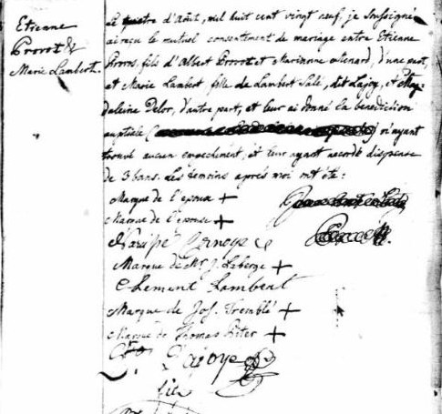
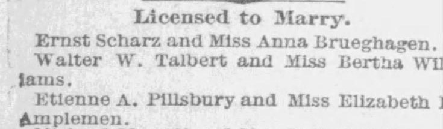
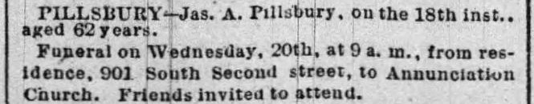
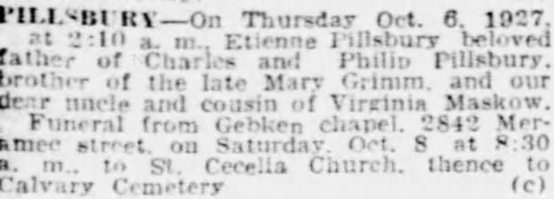
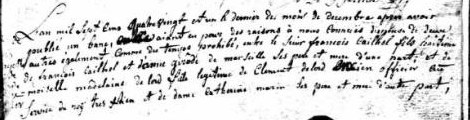
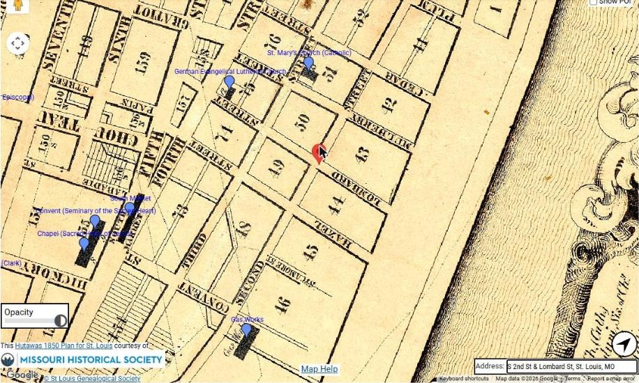
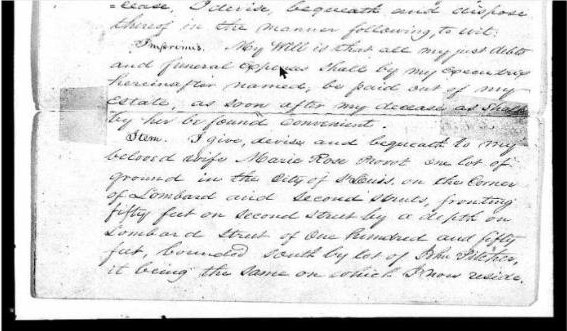

Étienne Provost n'a laissé ni journal ni lettre. On le connaît par les registres, les livres de compte de la traite, les souvenirs des autres. Cette salle réunit ces témoignages, un onglet par corpus, avec leur contexte, leurs découpures et les lieux dont ils parlent.
Dans les journauxVingt-six découpures de 1827 à 1960 : le tavernier de Saint-Louis, la nouvelle du rendez-vous de 1834, l'avis de décès de 1850, les souvenirs de Joseph La Barge, l'origine du nom de Provo, la statue du monument This Is the Place.
Le témoin MillerLes seules images de Provost faites d'après nature : les aquarelles d'Alfred Jacob Miller, qui voyage dans sa caravane en 1837. « Monsieur Proveau », « rond comme un marsouin », lance aux hommes : « Attrapez des chevaux ! »
L'arbre de la familleLes trois mariages d'Albert Provost à Chambly, les quatorze frères et sœurs d'Étienne, son mariage avec Marie-Rose Lambert, puis la descendance Pillsbury et Grimm à Saint-Louis jusqu'en 1913.
La maison de la rue LombardOù Provost est mort : l'angle sud-ouest des rues Lombard et Second, l'îlot 49, devenu le 901 South Second Street, habité par sa descendance jusqu'en 1889, cartographié en 1908 et effacé par les voies du pont MacArthur.
Chambly, le pays d'ÉtienneLe fort, la paroisse Saint-Joseph et les seigneuries du Richelieu ; la famille d'Albert Provost ; les deux terres que la baronnie de Longueuil lui concède en 1781, et ce qu'il reste à trouver pour les situer exactement.
Le testament d'ÉtienneLe testament de 1839, signé d'une croix, qui lègue tout à Marie-Rose ; son rejet par le juge en 1850 ; l'inventaire de la maison, meuble par meuble ; le cercueil de velours, les terres de l'Iowa et les comptes de la veuve.
La mère de Mary RoseLe certificat de décès de 1913 donne pour mère à la fille de Provost une « Madelin Delor ». L'enquête mène à Marie-Rose Lambert, à sa mère Madeleine Delor, fille du fondateur de Carondelet, et à sa grand-mère María Rosa Villalpando, captive de Taos.
« Provot » dans les journaux
Dépouillement de Newspapers.com · 1800-1963 · Missouri, Iowa, Dakota, Utah et presse nationale
De son vivant, Étienne Provost n'apparaît dans la presse de Saint-Louis que par les petites colonnes de la vie civique : une lettre qui l'attend à la poste, une licence de taverne, un lot de terrain, un procès, un avis de décès. Une seule fois, en 1834, on parle de lui comme d'un homme des montagnes. Sa célébrité vient ensuite, quand l'Utah se cherche des fondateurs d'avant les pionniers mormons : le trappeur canadien de Saint-Louis devient l'homme qui a donné son nom à Provo, le découvreur possible du col du Sud et du Grand Lac Salé, et finit statue de bronze. Voici les articles retrouvés, avec leur découpure, leur contexte et le lieu dont ils parlent.
La méthode
J'ai interrogé l'index de Newspapers.com (abonnement de l'auteur) de 1800 à 1963 avec les graphies connues du nom : « Etienne Provost », « Etienne Provot », « Etienne Provo », « Etienne Proveau », « Etienne Prevost », « E. Provost » et « E. Provot » (avant 1851), « Stephen Provost », « Provost Fork », « Old Provost », « Provost and Leclerc », ainsi que Provost, Provot, Provo, Proveau et Provaut seuls dans la presse du Missouri d'avant 1851 et de l'Utah. Cela représente environ 5 000 pages. J'ai lu le passage autour du mot trouvé pour toutes les pages américaines et canadiennes (plus de 2 300), puis la page entière pour les articles pertinents. Les homonymes sont très nombreux : le prévôt des marchands Étienne Marcel, les maréchaux prévôts (provost marshal), les Provost du Québec, de la Nouvelle-Angleterre et de l'Australie, et la ville albertaine de Provost.
Saint-Louis et la vie civiqueles montagnes et le Missourila postérité (Utah) Pastille vide : position approximative ou hypothétique. Cliquez une pastille pour aller à l'article.
De son vivant : le Canadien de Saint-Louis (1827-1850)
Missouri Republican, 8 nov. 1827, p. 3.
Novembre 1827 · Saint-Louis — The Missouri Republican, 8 et 15 novembre 1827, p. 3 · page ↗
Ce que dit l'article. La liste des lettres en souffrance au bureau de poste de Saint-Louis porte, à la lettre P, « Etienne Proveau », juste sous « Gabriel Philibert », de la famille de Joseph Philibert avec qui Provost était parti vers l'Arkansas en 1814.
Contexte. C'est la plus ancienne mention sûre de Provost dans la presse. Il est revenu des montagnes en septembre 1826 ; à l'automne 1827, il est de nouveau à Saint-Louis, entre deux engagements. La graphie « Proveau » est celle qu'emploieront aussi Joseph La Barge et le peintre Miller.
Lieu : bureau de poste de Saint-Louis (fiche L03) · position approximative.
Missouri Republican, 1er mai 1834, p. 3.
1833-1834 · Saint-Louis — Missouri Republican, 17 mai 1833, p. 3, et 1er mai 1834, p. 3 · 1833 ↗ · 1834 ↗
Ce que dit l'article. Le compte rendu des recettes de la ville énumère les licences payées. « Provost, Etien » y figure deux fois : comme vendeur de marchandises (7,50 $) et pour une « taverne ou débit de boissons » (50 $). La liste de 1833 donne la même chose sous « Provost E. ».
Contexte. Ces deux lignes confirment ce que disaient les historiens à partir d'actes notariés : entre ses campagnes, Provost tient une épicerie-taverne à Saint-Louis (fiche L21). C'est l'année où il part avec la caravane de Fontenelle et Drips vers le rendez-vous de la Ham's Fork : la taverne tourne sans lui, sans doute grâce à Marie-Rose Lambert.
Lieu : Saint-Louis, premier quartier (fiche L21) · position approximative.
Missouri Republican, 26 août 1834, p. 3.
Été 1834 · Ham's Fork, Independence — Missouri Republican, 26 août 1834, p. 3 (« From the Mountains ») ; repris par le Missouri Intelligencer, 30 août 1834 · page ↗
Ce que dit l'article. Un voyageur arrivé la veille des montagnes fait savoir, « pour l'information des amis de ceux qui accompagnent M. Provost (de l'American Fur Company) », que son parti n'a pas été attaqué par les Pawnees au printemps, contrairement à la rumeur. Sublette et le capitaine Cerré arrivent avec leurs ballots de castor. Provost comptait quitter le rendez-vous de la Ham's Fork du Rio Colorado six ou sept jours après l'auteur, parti vers le 10 juillet. L'informateur venait de Fort Vancouver, quitté le 31 mai, et a atteint Independence le 16 août.
Contexte. C'est le seul article d'époque qui parle de Provost comme d'un chef de parti dans les montagnes. Il montre que des familles de Saint-Louis s'inquiétaient pour les engagés qu'il conduisait, et confirme sa présence au rendez-vous de 1834 (fiche L28).
Lieux : rendez-vous de la Ham's Fork (fiche L28) · position approximative ; Independence (Missouri) · position certaine.
St Louis Republic, 21 oct. 1843, et Weekly Jefferson Inquirer, 29 juin 1843.
St Louis Republic, 5 févr. 1873, p. 7.St Louis Republic, 14 janv. 1846, p. 2.
1831-1873 · le premier quartier de Saint-Louis — listes fiscales et rôles de la cour
Ce que disent les articles. Les listes de taxes impayées publiées par la ville situent ses terrains :
1831 et 1834 : un lot de la rue Third, au voisinage d'un certain Gardhausen, est borné au sud par « Provost » (Missouri Republican, 8 mars et 19 avril 1831 ; 14 oct. 1834).
1843 : dans l'îlot 49 (rue Lombard), le lot de Francis Cailloux est borné « à l'est par Provost, au sud par Papin » ; dans l'îlot 76 (rue Cedar), un autre lot est borné à l'est par « Provo » (Weekly Jefferson Inquirer, 29 juin 1843 ; St Louis Republic, 21, 24 et 27 oct. 1843).
1845-1846 : Hector Moore, puis William Horine et Victoire Dabin poursuivent ensemble une dizaine de voisins créoles du quartier, dont Antoine et Michel Cailloux, les Dufresne, Francis Hernandez, Louis Martin et « Etienne Provost » ; les causes sont abandonnées ou reportées (St Louis Republic, 14 janv., 5 févr. et 11 mars 1846). En décembre 1845, la cour mentionne aussi « State vs Etienne Provot & Felix Lafre ».
1873 : une vente de fiduciaire décrit un lot de l'îlot 76 comme la moitié ouest d'un lot « vendu à Sarah Ann Langley par Etienne Provot et Marie Rose, sa femme, par acte du 18 mai 1835 » (St Louis Republic, 2-25 févr. 1873).
Contexte. Ces bribes dessinent le Frenchtown où Provost vit de 1830 à sa mort : quelques îlots au sud du vieux centre, entre les rues Second, Third, Lombard et Cedar, peuplés de familles créoles et canadiennes. Les procès de 1845-1846, qui visent tout un groupe de voisins à la fois, portent probablement sur un terrain ou une clôture communs.
Lieux : îlots 49 et 76 du premier quartier, près de l'angle Lombard-Second (nouvelle fiche L59 ; fiche L36) · positions approximatives.
The Hawk-Eye and Iowa Patriot (Burlington), 23 juillet 1840, p. 4.
1840-1852 · comté de Lee (Iowa) — The Hawk-Eye and Iowa Patriot, Burlington, 2 juillet-10 sept. 1840 (sept parutions) ; Democratic Banner, Davenport, mars-nov. 1852 · page 1840 ↗ · page 1852 ↗
Ce que dit l'article. Avis légal de la cour de district du comté de Lee, dans le territoire de l'Iowa : le 14 avril 1840, Josiah Spalding, Archibald Gamble, Patrick Walsh, « Etienne Prevost », John et Edward Walsh, John B. Sarpy, Antoine Leclaire et une vingtaine d'autres demandent le partage de « la Half Breed tract », environ 119 000 acres entre le Mississippi et la rivière Des Moines. Les défendeurs et tous les intéressés sont sommés de comparaître en octobre. En 1852, une vente du shérif exécute encore un jugement en faveur des mêmes requérants, Provost compris.
Contexte. La « Half-Breed Tract » avait été réservée en 1824 aux Métis des Sauks et des Renards. Dans les années 1830, spéculateurs et marchands de Saint-Louis rachètent les parts des Métis ou se les font céder en paiement de dettes. Ce document, inconnu des biographes, montre Provost parmi les ayants droit, au côté de bourgeois de la traite comme Sarpy et Gamble. Comment il a acquis ces droits, comme créancier ou par un lien familial, reste à chercher.
Lieu : ancienne réserve des Métis, entre Keokuk et Fort Madison (nouvelle fiche L60) · position approximative.
1843 · avec Audubon sur le haut Missouri — St. Louis Post-Dispatch, 12 avril 1891, p. 33 (« A Trip in '43 ») · page ↗ — et récit syndiqué dans une vingtaine d'hebdos du Montana et de l'Utah, 25 déc. 1919-23 janv. 1920 · page ↗
Ce que disent les articles. Le capitaine Joseph La Barge, pilote de l'Omega, raconte le voyage d'avril-juin 1843 avec Audubon et ses compagnons. Il termine en notant qu'Audubon resta à l'embouchure de la Yellowstone jusqu'à l'automne et redescendit en mackinaw « accompagné d'Etienne Proveau, le célèbre trappeur et chasseur ». Vingt-huit ans plus tard, une dépêche reprend une anecdote du même voyage : un assistant d'Audubon, appelé « Prou », se vantait de reconnaître toute plante à sa feuille ; Provost, « qui servait de guide », lui présente une feuille de maïs cueillie près d'un camp de Mandans. Le savant cherche en vain dans ses livres et devient la risée de l'équipage quand Provost dégage le grain à la racine.
Contexte. Le journal d'Audubon confirme que Provost chassa pour lui au fort Union et redescendit avec lui jusqu'à Saint-Charles (fiches L37 et L38). L'anecdote du maïs, absente du journal, vient sans doute de La Barge, qui aimait raconter. L'identité de l'« assistant » ainsi surnommé reste incertaine.
Lieux : fort Union (fiche L37) · position certaine ; villages mandans près de Fort Clark (nouvelle fiche L62) · position hypothétique.
Minneapolis Journal, 7 sept. 1903, p. 11.
1847 · Crow Creek (Dakota du Sud) — Minneapolis Journal, 7 sept. 1903, p. 11 (« Row with Redskins ») ; repris par l'Argus-Leader (Sioux Falls) et quatre hebdos du Wisconsin · page ↗
Ce que dit l'article. La société historique du Dakota du Sud vient de retrouver le récit d'un épisode oublié. En 1847, lors de son premier voyage comme maître de son propre vapeur, avec sa femme à bord, Joseph La Barge s'arrête à Crow Creek pour prendre le bois coupé par le commis Colin Campbell. Les Yanktons, mécontents de l'agent Matlock, interdisent aux bateliers de le charger et les frappent de leurs fouets de cuir cru jusqu'à ce qu'ils jettent le bois en désordre sur le pont. C'est alors qu'intervient « Etienne Provost, un frontalier intrépide dont les Indiens avaient peur » : le bois est chargé sans autre résistance. Le soir, les Yanktons envahissent le pont, tuent le batelier Charles Smith, et La Barge doit tirer au canon chargé de rivets.
Contexte. Provost a alors plus de soixante ans et remonte chaque printemps le Missouri pour l'American Fur Company (fiche L39). Le récit, publié un demi-siècle plus tard et tiré des souvenirs de La Barge, est le seul qui le montre en action dans ses dernières années.
Lieu : embouchure du Crow Creek sur le Missouri, comté de Buffalo (nouvelle fiche L61) · position approximative.
Tri-Weekly Missouri Republican, 4 juillet 1850, p. 2.Tri-Weekly Missouri Republican, 30 juillet 1850, p. 2.
3 juillet 1850 · Saint-Louis — Tri-Weekly Missouri Republican, 4 juillet 1850, p. 2 · page ↗ — et 30 juillet 1850, p. 2, puis The Missouri Republican, 2 août-20 sept. 1850 (sept parutions) · page ↗
Ce que disent les articles. Sous « Died », entre deux faire-part, une ligne : « Hier après-midi, vers 4 heures, M. Etienne Provot, un vieux résident de cette ville. » Amis et connaissances sont invités aux funérailles le jour même à 16 h, depuis sa maison du coin des rues Lombard et Second, jusqu'au cimetière catholique. Quatre semaines plus tard, un avis informe les créanciers que les lettres d'administration de la succession d'« Etienne Provot » ont été accordées le 29 juillet 1850 par le juge de la Cour des successions de Saint-Louis à « Mary Provot », administratrice.
Contexte. Ces deux textes, cités en 1909 par l'abbé W. R. Harris (voir plus bas), fixent la date de la mort (3 juillet 1850), l'adresse de la maison et la graphie qu'employait la famille. L'administratrice est sa veuve, Marie-Rose. L'avis ne dit rien de la cause du décès.
Lieux : maison du coin des rues Lombard et Second (nouvelle fiche L59) · position approximative ; cimetière catholique (fiches L40, L55).
1880 · Saint-Louis et le haut Missouri — St. Louis Globe-Democrat, 18 juillet 1880, p. 12 (« Death of Louis St. Onge ») · page ↗
Ce que dit l'article. La nécrologie du voyageur Louis St. Onge, mort à Sioux City, le range dans « cette héroïque bande de pionniers qui ouvrit au commerce, sous la direction de Pierre Chouteau, les sources du Missouri », avec William Archambault, Etienne Provost, Fred Dupuis, Joseph Picot, Charles Guérin, J. Pacquenolles, le capitaine Guion, Germain Pelletier et Paul Guitar.
Contexte. Trente ans après sa mort, la mémoire de Saint-Louis classe encore Provost parmi les engagés canadiens de la maison Chouteau, et non parmi les découvreurs. C'est le Provost du recruteur de l'American Fur Company (fiche L35).
Lieu : Saint-Louis (fiche L35) · position approximative.
1823 · le col du Sud — The Nebraska City Weekly (The Conservative de J. Sterling Morton), 24 juin 1902, p. 1 · page ↗ — et Salt Lake Herald, 25 déc. 1904, p. 17 · page ↗
Ce que disent les articles. Dans sa série « Incidents of Western History », l'ancien secrétaire à l'Agriculture J. Sterling Morton se demande qui a ouvert la grande route de l'Ouest. Il note que la tradition des trappeurs attribuait depuis longtemps le passage du col du Sud à « Etienne Provost, d'après qui la ville de Provo en Utah fut nommée », qui y aurait conduit un parti d'Ashley et d'Henry en 1823 ; et puisqu'on ne peut ni le prouver ni le réfuter, conclut-il, « il n'y a pas de raison de lui refuser la gloire ». En décembre 1904, à l'occasion du monument de Jim Bridger à Kansas City, le Salt Lake Herald écrit qu'à l'automne 1823 Ashley envoya un nouveau parti sous Étienne Provost, « trappeur et traiteur réputé », par la Bighorn et la Wind jusqu'à la Green, et que ce parti, où se trouvait Bridger, découvrit le col.
Contexte. Ces textes lancent une idée que la presse répétera pendant soixante ans : Provost, découvreur probable du col du Sud. Les historiens donnent plutôt la traversée de 1824 au parti de Jedediah Smith et Thomas Fitzpatrick, guidé par des Crows (fiche L17). Le même article de 1904 paraît aussi dans le Globe-Democrat, le Kansas City Star et l'Omaha Bee.
Lieux : col du Sud (fiche L17) · position certaine ; monument de Bridger, cimetière Mount Washington (nouvelle fiche L63).
Intermountain Catholic, 30 janv. 1909, p. 1 et suite.The Daily Herald (Provo), 26 févr. 1924, et Salt Lake Tribune, 27 févr. 1924.JG-TC (Illinois), 24 janv. 1934.
Provo, Provot, Provost · le nom — The Intermountain Catholic (Salt Lake City), 30 janv. 1909 · page ↗ ; The Daily Herald (Provo), 26 févr. 1924 · page ↗ ; Salt Lake Tribune, 27 févr. 1924 · page ↗ ; E. S. Watson, « Two Names on Utah's Map », 1934-1937 · page ↗
Ce que disent les articles.
1909. Dans sa série « Catholic Church in Utah », l'abbé W. R. Harris consacre un long article à « Etienne Provot, guide, trappeur, chasseur ». Il a fouillé le dossier de la succession à Saint-Louis : le nom y est « Provot, et non Provost ». Il cite l'avis de décès du 4 juillet 1850, nomme la veuve, « Marie Rose Salle dit Lajoie », et en conclut que le t muet explique la forme « Provo » donnée à la ville, à la vallée et à la rivière.
1924. La parution du livre de J. M. Jensen, The Early History of Provo, est saluée par le Daily Herald de Provo d'un encadré « He Named Provo » orné d'un portrait dessiné de fantaisie, et par une dépêche reprise dans tout l'Utah : employé en 1822 par la Rocky Mountain Fur Company, Provot aurait été le premier Blanc à passer le col du Sud et à pénétrer dans la région du Grand Lac Salé, où son parti fut décimé par les Indiens en 1824.
1934-1937. Dans sa série syndiquée « Fifty Famous Frontiersmen », reprise par une vingtaine de journaux, le journaliste Elmo Scott Watson présente « deux noms sur la carte de l'Utah » : Provot et Ogden. Il note que Provot a peut-être vu le lac avant Bridger et passé le col avant Fitzpatrick, et que le site de la ville qui porte son nom fut « baptisé dans le sang ».
Contexte. C'est la presse de l'Utah, catholique puis mormone, qui fait de Provost un personnage public. L'article de Harris est le premier à établir la filiation entre le nom de la ville et la graphie familiale « Provot ». Le portrait de 1924, repris ensuite, est une invention : aucun portrait de Provost n'est connu.
Deseret News, 24 juillet 1912 (recomposé en trois colonnes).Idaho State Journal, 8 déc. 1955 : Dan'l Hale, par Norman Marsh.
Octobre 1824 · le guet-apens — Deseret News, 24 juillet 1912 · page ↗ ; Salt Lake Tribune, 25 juillet 1912 (« Instance of Treachery ») ; bande dessinée Frontier Scout / Dan'l Hale, février-décembre 1955 et 1956-1958 · page ↗
Ce que disent les articles. Pour le Pioneer Day de 1912, le Deseret News publie « The Coming of Provot » : venu de Saint-Louis par le Colorado, Provot entre en Utah par la Green en 1823 ; campé près de l'embouchure de la Provo, il reçoit un chef snake-ute nommé Mauvaise Gauche et une trentaine de guerriers ; le chef propose de fumer le calumet, mais exige qu'on dépose les armes, le fer chassant son esprit gardien ; au signal, ses hommes tirent couteaux et tomahawks ; Provot et quelques hommes s'échappent. En 1955, la bande dessinée Dan'l Hale de Norman Marsh, publiée dans une dizaine de quotidiens, consacre plusieurs mois à « Etienne Provot et François Leclerc » : départ de Saint-Louis en 1822, hiver sur la Strawberry, descente du canyon de la Provo, puis le massacre, avec cette légende : « sur ce sol se dresse aujourd'hui la ville de Provo, nommée d'après Étienne Provot, qui survécut au massacre ».
Contexte. Le récit reprend pour l'essentiel celui des historiens (fiche L11). La presse le situe au bord de la Provo, alors que les sources anciennes parlent plutôt de la rivière Jordan. La bande dessinée de 1955 est la forme la plus populaire jamais donnée à la vie de Provost.
Lieux : rivière Jordan (fiche L11) · position approximative ; Provo (fiche L42).
St. Louis Globe-Democrat, 31 août 1913.
Août 1913 · Saint-Louis — St. Louis Globe-Democrat, 31 août 1913 (« Death Recalls Pioneer Days ») · page ↗
Ce que dit l'article. La mort de Mary Rose Pillsbury, 83 ans, attire de nombreuses condoléances chez son gendre Charles G. Grimm, 4231 South 37th Street. Veuve de James A. H. Pillsbury, épousé à la Vieille Cathédrale en 1857, elle était « Miss Mary Rose Provost, fille d'Étienne Provost, attaché à l'American Fur Company, qui avait la réputation d'un explorateur audacieux des Rocheuses ». Le journal la dit arrière-petite-fille de Clément Delor de Treget, premier commandant de Carondelet. Le sermon funèbre est prononcé par le père Jones, curé de Saint-Thomas-d'Aquin.
Contexte. Cette nécrologie, qui complète la fiche L43, est la seule trace de presse de la descendance directe de Provost. Elle rattache la famille de Marie-Rose aux Delor de Treget, fondateurs de Carondelet, un lien à vérifier dans les registres.
Lieu : maison de Charles G. Grimm, sud de Saint-Louis (fiche L43) · position approximative.
La statue (1926-1960)
Ogden Standard-Examiner, 13 juillet 1941.
Hiver 1824-1825 · Ogden — Ogden Standard-Examiner, 13 juillet 1941 (« Ogden Locale for Trapper Confabs »), repris en 1942 et 1946 · page ↗
Ce que dit l'article. D'après J. Cecil Alter, auteur d'une biographie de Jim Bridger, une alcôve abritée juste au nord du site actuel d'Ogden aurait été le refuge d'hiver d'Étienne Provot et de ses hommes en 1824-1825, puis le quartier d'hiver des trappeurs d'Ashley en 1825-1826 et le lieu du rendez-vous d'été de 1826.
Contexte. C'est l'hypothèse d'Alter ; la plupart des historiens placent l'hiver de Provost au bord du lac Utah (fiche L13). L'article montre comment chaque ville de l'Utah cherche à s'approprier le passage des trappeurs.
Lieu : au nord d'Ogden (nouvelle fiche L65) · position hypothétique.
Salt Lake Tribune, 26 août 1926.Sunday Herald (Provo), 15 déc. 1946, p. 3.Deseret News, 24 juillet 1947, p. 1.Salt Lake Tribune, 27 mai 1960.
1926-1960 · Salt Lake City et Provo — Salt Lake Tribune, 26 août 1926 · page ↗ ; Sunday Herald (Provo), 15 déc. 1946 · page ↗ ; Deseret News, 24 juillet 1947 · page ↗ ; Salt Lake Tribune, 27 mai 1960 · page ↗
Ce que disent les articles.
1926. Pour le centenaire de leur entrée dans la vallée, le chapitre Spirit of Liberty des Daughters of the American Revolution dévoile un monument avec plaque en l'honneur de James Bridger, Jedediah Smith et Étienne Provot, au nouveau parc municipal en face de l'hôpital St. Mark's ; la femme du gouverneur Dern le dévoile, l'historien J. Cecil Alter fait le discours.
1946. Le monument This Is the Place, prévu pour le centenaire de l'arrivée des Mormons, recevra sur sa face est une statue de bronze de sept pieds d'Étienne Provot, l'une de six figures d'avant les pionniers. Pour lui faire place, explique le secrétaire John D. Giles, on a retiré Kit Carson du projet : Provot était « plus étroitement associé à l'histoire de l'Utah ».
1947. Au dévoilement du 24 juillet 1947, le groupe de la face est est dévoilé par Charles Washakie, fils du chef shoshone, et par « l'évêque E. Orval Provost, petit-neveu d'Étienne Provost ».
1960. La State Bank of Provo inaugure un immeuble moderniste dont le hall abrite une statue contemporaine d'Étienne Provot.
Contexte. En vingt ans, le trappeur de Saint-Louis devient l'un des « pères » non mormons de l'Utah. La présence d'un petit-neveu au dévoilement de 1947 suggère qu'une branche de la famille Provost de Chambly s'était établie en Utah, une piste généalogique à suivre. La statue de 1947 se voit toujours au monument (fiche L44) ; celle de la banque n'a pas été retrouvée.
Lieux : plaque de 1926 (nouvelle fiche L64) · position hypothétique ; monument This Is the Place (fiche L44) · position certaine ; State Bank of Provo (nouvelle fiche L66) · position approximative.
L'écho dans la presse, décennie par décennie
Au-delà des articles ci-dessus, Provost revient sans cesse dans la presse de l'Utah et dans les séries syndiquées. Ces mentions, souvent brèves, montrent comment son image se fixe.
Années
Ce que répète la presse
Exemples
1907-1911
Un article syndiqué sur les pionniers du Missouri le dit « découvreur probable du col du Sud ». Le Globe-Democrat revendique pour un « autre Saint-Louisien » la gloire d'avoir ouvert la région du Lac Salé.
Buffalo Enquirer, Inter Ocean, Idaho Press, LA Times (1907-1909) ; St. Louis Globe-Democrat, 30 août 1908
1919-1931
Dépêches nationales sur les hommes d'Ashley : « Etienne Provot » figure parmi les « cent jeunes gens entreprenants » de 1822, avec Bridger, Fitzpatrick et les Sublette ; « la ville de Provo perpétue sa renommée ».
Une quarantaine d'hebdos en 1925-1926, autant en 1927 et en 1931
1928-1949
Débats sur le premier Blanc au Grand Lac Salé et au lac Utah ; spectacles historiques à Provo (1932, 1936), questionnaires scolaires, chroniques du centenaire de Provo (1949) : « Etienne Provot (prononcez Provo) entra dans la vallée en 1824 ».
SL Telegram, 8-9 nov. 1928 ; Daily Herald, 28-30 juin 1932 ; Deseret News, 30 juin 1949
1937
La presse danoise d'Omaha explique à ses lecteurs que la ville de Provo porte le nom d'Étienne Provot.
Den Danske Pioneer, 11 nov. 1937
1955-1958
Bande dessinée Frontier Scout / Dan'l Hale : Provot et François Leclerc, l'hiver sur la Strawberry, le massacre, la rencontre avec Ogden (« M'sieu Ogden, je suis Étienne Provot ! »).
Dépêches dans une quarantaine d'hebdos de l'Utah : Bridger et Provost, « deux des trappeurs les plus célèbres de l'Ouest », premiers à voir le Grand Lac Salé à l'hiver 1824-1825.
Hebdos de l'Utah, févr.-mars 1960
Ce que la presse ne dit pas
Rien de ses grandes campagnes, sur le moment. Aucun journal de Saint-Louis ne rapporte, au moment des faits, ses prisons de Santa Fe, le massacre de 1824, la rencontre avec Ashley en 1825 ou l'expédition Nicollet de 1839. Seul l'article d'août 1834 parle de lui comme d'un homme des montagnes.
Les mentions de 1833-1849 sont peu nombreuses et éparses. La presse de Saint-Louis d'avant 1850 n'est numérisée que partiellement, et la reconnaissance de texte y est souvent mauvaise.
Environ 740 pages de l'Utah ne répondent qu'à « Provot » seul. C'est souvent une mauvaise lecture de « Provo ». Elles n'ont pas été lues une à une.
Homonymes écartés
Étienne Marcel, « prévôt des marchands » de Paris (des centaines de pages, jusqu'à une pièce de théâtre à Brooklyn en 1926) ; Étienne Boileau, prévôt de Paris ; les maréchaux prévôts (provost marshal) ; Sir George Prevost ; Baptiste Janot Provost de Saint-Charles (1816-1818) ; un juge Provost de Valparaiso (1818-1820) ; Joseph Provo, journalier de la ville de Saint-Louis (1827) ; la maison de pickles Wells, Miller & Provost de New York, dont les réclames inondent la presse de 1850 ; Gen. A. M. Provost de Philadelphie ; E. J. Provot de Beaver Dam (Wisconsin), assidu de la chronique mondaine de 1927 à 1937 ; L. Vane Provost d'American Fork (Utah), annonceur de 1960 ; les nombreux Provost du Québec et de l'Ontario ; et la ville de Provost (Alberta).
Sources
The Missouri Republican (Saint-Louis), 8 et 15 nov. 1827 ; 8 mars et 19 avril 1831 ; 17 mai 1833 ; 1er mai, 26 août et 14 oct. 1834 ; 2 août-20 sept. 1850. Tri-Weekly Missouri Republican, 4 et 30 juillet 1850.
The St Louis Republic, 21-27 oct. 1843 ; 1er-25 déc. 1845 ; 14 janv., 5 févr., 11 mars 1846 ; 2-25 févr. 1873. Weekly Jefferson Inquirer, 29 juin 1843.
The Hawk-Eye and Iowa Patriot (Burlington), 2 juillet-10 sept. 1840 ; Democratic Banner (Davenport), 26 mars-19 nov. 1852.
St. Louis Globe-Democrat, 18 juillet 1880 ; 18 déc. 1904 ; 30 août 1908 ; 31 août 1913. St. Louis Post-Dispatch, 12 avril 1891.
The Nebraska City Weekly, 24 juin 1902 ; Minneapolis Journal, 7 sept. 1903 ; Salt Lake Herald, 25 déc. 1904.
The Intermountain Catholic, 30 janv. 1909 ; Deseret News, 24 juillet 1912, 24 juillet 1947 ; Cascade Courier, 26 déc. 1919 (et autres hebdos du Montana).
The Daily Herald (Provo), 26 févr. 1924 ; Salt Lake Tribune, 27 févr. 1924, 26 août 1926, 27 mai 1960 ; Sunday Herald (Provo), 15 déc. 1946 ; Ogden Standard-Examiner, 13 juillet 1941.
E. S. Watson, « Fifty Famous Frontiersmen : Two Names on Utah's Map », JG-TC (Mattoon, Illinois), 24 janv. 1934 et autres journaux ; N. Marsh, Dan'l Hale, Idaho State Journal, 8 déc. 1955 et autres journaux.
Tous les articles ont été consultés sur Newspapers.com (abonnement de l'auteur), le 20 novembre 2026. Les découpures sont des captures d'écran des pages numérisées.
Le témoin Miller
Alfred Jacob Miller (1810-1874), peintre de Baltimore · caravane de 1837 vers le rendez-vous de la Green River · aquarelles de 1855-1860 et leurs notes
Il n'existe aucun portrait posé d'Étienne Provost. Les seules images faites par quelqu'un qui l'a vu sont celles d'Alfred Jacob Miller, qui a voyagé dans sa caravane en 1837. Miller l'a peint au moins trois fois et il a écrit sur lui quelques lignes. C'est le seul témoin qui nous dise à quoi il ressemblait, comment il parlait, et qui nous ait conservé ses paroles, en français : « Attrapez des chevaux ! »
Le voyage de 1837
Au printemps 1837, le capitaine écossais William Drummond Stewart engage à La Nouvelle-Orléans un jeune portraitiste de Baltimore, Alfred Jacob Miller, pour dessiner son voyage aux montagnes Rocheuses. Ils se joignent à la caravane de ravitaillement de l'American Fur Company, menée par Thomas Fitzpatrick, qui part des environs de Westport (aujourd'hui Kansas City) avec des charrettes et des chariots chargés de marchandises de traite. Provost, alors âgé d'environ 52 ans, en est le sous-chef. Après le fort Laramie, les chariots restent derrière : les marchandises continuent à dos de cheval et en charrettes à deux roues jusqu'au rendez-vous de Horse Creek, sur la Green River, en juillet.
Sur place, Miller fait des croquis rapides au crayon et à l'aquarelle. Il les reprend toute sa vie. En 1858, le collectionneur William T. Walters lui commande 200 aquarelles à 12 dollars pièce, chacune accompagnée d'un texte descriptif. Ce sont ces notes, écrites une vingtaine d'années après le voyage, qui nomment « Monsr Proveau ». Miller écrit le nom comme il l'entend : Proveau, prononcé « Provo ».
A. J. Miller, Attrapez des Chevaux, vers 1855, aquarelle, gouache et crayon, 20,8 × 31,4 cm. Ricketts Art Foundation (catalogue raisonné n° 59). Image : Alfred Jacob Miller Online Catalogue ↗.
Détail, coin inférieur gauche : la tente de Provost. Il est debout derrière la mule, de profil, les mains portées à la bouche.
« Attrapez des chevaux ! »La piste, entre le fort Laramie et la Green River, été 1837
La scène. C'est le soir. La caravane a fait halte, les hommes cuisinent par « mess » de cinq à huit autour des feux. Les gardiens ramènent le troupeau du pâturage dans un nuage de poussière. Provost, devant sa tente, appelle les hommes : chacun doit rattraper son cheval par la longe qui traîne et le mettre au piquet pour la nuit.
L'inscription. Miller a écrit en haut à droite : « (loquitur) Monsieur Proveau / Attrapez des Chevaux ». Le mot latin loquitur veut dire « il parle ». C'est la seule parole de Provost que l'on connaisse, et elle est en français.
Selon le catalogue. Jim Hardee y voit le « sous-chef » de la caravane, au centre devant sa tente. Peter Hassrick décrit « le corpulent Etienne Provost » et pense que c'est une étude pour l'aquarelle de la série Walters (ci-dessous).
Détail : le point de vue est « depuis la tente de Monsieur Proveau ». Le gros homme en peau de daim et bonnet de fourrure, debout derrière la mule, les deux mains à la bouche, c'est lui.
Le texte de MillerNote accompagnant l'aquarelle Walters, 1858-1860
Miller y décrit Provost en une phrase, entre anglais et français : « Mo'sieur P. adipose & rotonde ». Voici la note entière, en traduction :
« Le point de vue est pris depuis la tente de Monsieur Proveau, et l'heure est proche du coucher du soleil. Les hommes ont tranquillement préparé leur repas du soir. M'sieu P., adipeux et rotond, “engraissant la terre maigre à chaque pas”, porte maintenant les deux mains à sa bouche et, de ses poumons de stentor, braille quelque chose comme “Attrapez des chevaux”. Les hommes se lèvent aussitôt et courent vers un nuage de poussière d'où l'on voit sortir les chevaux. Les gardiens les ramènent de leur pâturage, à deux ou trois milles, et chacun attrape le sien par la longe qui traîne au sol depuis son cou, longue d'une quinzaine de pieds. De là, ils vont à leurs piquets, où on les attache pour la nuit, avec assez de corde pour brouter jusqu'au matin. »
Selon le catalogue. Pour Peter Hassrick, Provost, « réputé l'un des découvreurs du Grand Lac Salé », est la silhouette de profil qui se détache devant sa tente. Ses « poumons de stentor » lui permettaient de crier les ordres en français comme en anglais.
A. J. Miller, Threatened Attack on the Caravan by a Horde of Indians, s. d., huile sur papier, 23 × 36,8 cm. Gilcrease Museum, Tulsa, 0126.2429 (CR n° 155C). Image en couleurs : Alfred Jacob Miller Online Catalogue ↗.
La version Walters : Threatened Attack – Approach of a Large Body of Indians, 1858-1860, aquarelle, 24,8 × 36,2 cm, 37.1940.76 (CR n° 155A), CC0. Le musée n'en diffuse qu'une photographie en noir et blanc. Walters ↗
« Un sous-chef au corps rond comme un marsouin »La piste de la Platte, 1837
La scène. Un matin, une grande troupe de Lakotas (Miller dit « Sioux ») arrive au galop, armée et parée pour la guerre. Les hommes de la caravane arrêtent le convoi et tiennent palabre. Les Lakotas sont chez eux et réclament un dédommagement pour le gibier pris sur leurs terres. Le calumet circule, puis on sort des chariots du drap, des couvertures, des fusils, du tabac et des couteaux.
Provost dans la note. Selon Jim Hardee, les notes de Miller pour cette œuvre et pour Catching Up désignent Provost comme un « sous-chef au corps rond comme un marsouin » (a corpus round as a porpoise). Le texte complet de cette note n'est pas en ligne : la citation vient du catalogue raisonné et de l'édition de Marvin C. Ross (1951). On ne sait pas lequel des cavaliers est Provost. Au premier plan, l'homme corpulent en veste jaune est un candidat, mais aucune source ne le confirme.
À lire avec prudence. Le Walters Art Museum avertit que les textes de Miller sur les Autochtones reflètent le racisme de leur époque. Miller y parle de « chantage » et de « horde de pirates » pour ce qui était une demande de droit de passage.
Comment Miller le décrit
Les mots de Miller
Traduction
Ce qu'ils disent
« Monsr Proveau », « Mo'sieur P. »
Monsieur Provost
Miller l'appelle « Monsieur », à la française, comme on le faisait sans doute dans la caravane. L'orthographe note la prononciation.
« subleader »
sous-chef
Il commande en second, sous Fitzpatrick : c'est lui qui donne les ordres au camp.
« a corpus round as a porpoise »
un corps rond comme un marsouin
Le trait le plus frappant. Le catalogue note qu'à cause de sa corpulence, il est « facile à repérer » dans les images.
« adipose & rotonde »
adipeux et rotond
Miller mêle l'anglais et le français, peut-être pour imiter le parler du camp.
« larding the lean earth as he walks along »
engraissant la terre maigre à chaque pas
Une citation de Shakespeare (Henri IV, 1re partie), où elle se dit du gros Falstaff qui sue en marchant. Miller fait de Provost un Falstaff des Rocheuses.
« with stentorian lungs bawls out »
de ses poumons de stentor, il braille
Une voix énorme, qui porte jusqu'au troupeau.
« Attrapez des Chevaux »
(en français dans le texte)
Sa seule parole connue. Miller l'écrit « attrapez » ou « attrapaz », comme il l'a entendue.
Miller n'a vu Provost que quelques semaines, et il écrit vingt ans plus tard, avec humour. Le portrait est une caricature affectueuse plutôt qu'une description exacte. Mais c'est le seul témoignage visuel : les statues et les illustrations du XXe siècle (voir l'onglet « Dans les journaux ») sont des inventions.
Ce qui reste à trouver
La note complète de Threatened Attack, dans Marvin C. Ross, The West of Alfred Jacob Miller (1951, rééd. 1968), où toutes les notes Walters sont transcrites.
L'aquarelle originale de l'album Stewart (CR n° 155), qui a servi de modèle aux deux versions présentées ici.
Une photographie en couleurs de la version Walters de Threatened Attack : le musée n'a pas encore numérisé l'œuvre en couleurs.
D'autres croquis du voyage de 1837 où un homme corpulent apparaît sans être nommé. Le catalogue dit que Provost « paraît dans plusieurs images », sans les énumérer.
Marvin C. Ross (éd.), The West of Alfred Jacob Miller (1837), Norman, University of Oklahoma Press, 1951 (notes de Miller pour la série Walters).
Jack B. Tykal, Etienne Provost : Man of the Mountains, Liberty (Utah), Eagle's View, 1989.
Shakespeare, Henri IV, 1re partie, acte II, scène 2 (« Falstaff sweats to death, / And lards the lean earth as he walks along »).
La parenté et le chemin de Saint-Louis
Chambly, Michilimackinac, Saint-Louis · 1695-1835
Comment un fils de cultivateur de Chambly se retrouve-t-il à Saint-Louis, à 1 800 km de chez lui ? La littérature répond qu'il y avait « de la famille ». Les archives disent autre chose, et davantage : Étienne descend par sa mère d'une lignée de voyageurs née à Michilimackinac, et il est parti en janvier 1805, à 19 ans, comme engagé d'une compagnie de traite de Montréal, pour Michilimackinac et les « Dépendances du Sud », c'est-à-dire la route du Mississippi.
Ce que dit la littérature
L'idée vient de l'historien Denis Vaugeois. Dans Le Devoir des 16 et 17 février 2002, il écrit qu'à Saint-Louis, Étienne Provost a « de la famille éloignée, tant du côté des Provost que de celui de sa mère, Marie-Anne Mainard (Ménard) ». Il ajoute qu'Étienne « n'a pas 20 ans quand il choisit le monde de la traite des fourrures ». Serge Bouchard et Marie-Christine Lévesque (2014) reprennent l'idée en parlant d'« oncles et cousins Provost et Ménard » déjà installés à Saint-Louis. Ni l'un ni l'autre ne nomme ces parents ni ne cite de source. Le mot de Vaugeois, « éloignée », est le plus juste : aucun oncle ni cousin germain d'Étienne n'a été trouvé dans les registres de Saint-Louis.
Mariage d'Albert Provost et de Marie-Anne Mainard, Chambly, 25 janvier 1785 (fin de l'acte) : « Toussaint Provost frère, François Bourassa oncle, Étienne Patenaude beau-frère de l'époux ; Joseph Mainard frère, Joseph Mainard oncle de l'épouse ; Michel Laroque aussi oncle ». Drouin, Saint-Joseph de Chambly, 1784-1788, image 11.
L'acte de mariage du 25 janvier 1785 donne la filiation de la mère d'Étienne : Marie-Anne Mainard est « fille de feu Antoine Mainard et de Thérèse Laroque dit Lafontaine », de la paroisse de Chambly. Ses témoins sont son frère Joseph, son oncle Joseph Mainard et son oncle Michel Laroque. Les registres de Chambly contiennent les baptêmes d'autres enfants d'Antoine Ménard et de Thérèse Laroque entre 1758 et 1763.
Les généalogies publiées (WikiTree, généalogie Mesnard-Ménard) prolongent la lignée. À vérifier dans les actes originaux : seul le premier maillon (le mariage de 1785) a été lu ici.
Pierre Couc dit Lafleur, soldat et interprète à Trois-Rivières, et Marie Miteouamigoukoue, Algonquine. Ce sont aussi les parents d'Élisabeth Couc, la célèbre « Madame Montour », interprète à New York et en Pennsylvanie.
Madeleine Couc et Maurice Ménard dit Lafontaine (1664-1741), interprète et traiteur au fort de Michilimackinac, mort à Chambly.
Antoine Ménard (1695-1764), né au fort de Michilimackinac, voyageur. Il s'engage le 15 juin 1736 pour Michilimackinac, puis en 1738 dans l'expédition de La Vérendrye : il aide à bâtir le fort La Reine (Portage-la-Prairie, Manitoba). Revenu au pays, il devient cultivateur et capitaine de milice à Chambly. Marié à Boucherville en 1723 avec Marie Huet dit Dulude.
Antoine-Joseph Ménard (1723-1764), peut-être né à Michilimackinac, marié à Chambly en janvier 1753 avec Thérèse Laroque dit Lafontaine (1726-1797).
Marie-Anne Ménard (née vers 1755), mariée en 1785 à Albert Provost, veuf.
Étienne Provost, né à Chambly le 21 décembre 1785.
Par sa mère, Étienne aurait donc une ancêtre algonquine et un arrière-grand-père né au cœur des Pays d'en haut. Côté paternel, il descend déjà de Martin Prévost et de Marie-Olivier Manitouabeouich (fiche L02). La traite est une affaire de famille chez les Ménard de Chambly : la base de données des contrats de voyageurs en compte au moins onze pour Michilimackinac et le Nord, de 1736 à 1817, dont ceux de Joseph et de François Ménard de Chambly le 27 février 1784, l'année précédant le mariage. Le Joseph de 1784 pourrait être le frère témoin du mariage, ce qui reste à prouver.
Le départ : le contrat du 25 janvier 1805
La pièce décisive se trouve dans la base de données des engagements de voyageurs de la Société historique de Saint-Boniface, tirée des greffes de notaires de Montréal. Elle donne le contrat suivant :
Engagé : Étienne Provost, de la paroisse de L'Acadie, la Petite-Cadie où son père avait reçu deux terres en 1781 (voir l'onglet « Chambly »).
Date et lieu : 25 janvier 1805, à Montréal, devant le notaire Jonathan A. Gray.
Employeur : Parker, Gerrard, Ogilvy & Co., négociants de Montréal dans la traite du Sud-Ouest ; la société entre en 1806 dans la Michilimackinac Company.
Destination : Michilimackinac et les « Dépendances du Sud ».
Fonction : « milieu », c'est-à-dire rameur du centre du canot, et hivernant : il passera l'hiver dans l'intérieur. Durée : un an.
Gages : 500 livres ; 8 piastres d'avance à la signature et 8 au départ ; « un équipement double ordinaire ».
Étienne a 19 ans, ce qui confirme Vaugeois. Les « Dépendances du Sud » sont les postes que Michilimackinac ravitaille au sud-ouest : la baie des Puants (Green Bay), les rivières Fox et Wisconsin, Prairie du Chien et le haut Mississippi. C'est le chemin qui mène, en descendant le fleuve, à Saint-Louis, devenue américaine l'année précédente avec l'achat de la Louisiane (1803-1804). Le 8 avril 1807, la Michilimackinac Company engage à son tour un Jean-Baptiste Provost fils, de La Prairie, pour Michilimackinac, l'île Saint-Joseph, le « Mississippi » et le « Missouri » : la filière mène bien vers Saint-Louis. Les Toussaint Provost engagés pour Michilimackinac en 1802 et 1804 viennent d'autres paroisses (Sault-au-Récollet, Montréal) ; rien ne les rattache à la famille d'Étienne.
Le chemin : 1 500 km jusqu'à Michilimackinac, puis le Mississippi
Au printemps 1805, les canots de maître partent de Lachine. Ils remontent l'Outaouais jusqu'à Mattawa, franchissent la ligne de partage vers le lac Nipissing, descendent la rivière des Français jusqu'à la baie Georgienne et longent la rive nord du lac Huron jusqu'à l'île Mackinac. Il faut cinq à six semaines et une trentaine de portages. Pour les « Dépendances du Sud », les marchandises repartent dans des canots plus petits : traversée du lac Michigan jusqu'à Green Bay, remontée de la Fox, portage de la Wisconsin, descente jusqu'à Prairie du Chien, au Mississippi. De là, le fleuve conduit à Saint-Louis, à 900 km plus au sud.
La carte principale de l'atlas suit maintenant ce trajet, en deux segments : T01 (Chambly-Michilimackinac, 1805, d'après le contrat) et T23 (Michilimackinac-Saint-Louis, entre 1805 et 1814, hypothèse). Il remplace l'itinéraire par Détroit et Chicago proposé par Bouchard et Lévesque.
Entre 1805 et 1814, on perd sa trace. Il a pu renouveler son engagement, hiverner dans le haut Mississippi ou s'établir tôt à Saint-Louis. La guerre de 1812 coupe ensuite la route : les Britanniques prennent Michilimackinac en juillet 1812 et Prairie du Chien en 1814. Cette année-là, Provost est à Saint-Louis et part avec Joseph Philibert vers le haut Arkansas (fiche L04).
Les Provost et les Ménard de Saint-Louis
Pierre Ménard de Kaskaskia. Le Ménard le plus en vue de la région est Pierre Ménard (1766-1844), né à Saint-Antoine-sur-Richelieu, à une vingtaine de kilomètres de Chambly. Négociant à Kaskaskia, en face de Saint-Louis, il est associé en 1809 à la St. Louis Missouri Fur Company de Manuel Lisa et des Chouteau, puis devient le premier lieutenant-gouverneur de l'Illinois. Mais son père, Jean-Baptiste Ménard dit Brindamour, était un soldat venu de France, marié en 1763 : ce n'est pas la lignée de Marie-Anne. Si Étienne a profité de ce réseau, c'est comme « pays » du Richelieu, pas comme parent. Aucun document ne les relie.
Les registres catholiques de Saint-Louis (collection Drouin, États-Unis) contiennent une centaine d'actes au nom de Ménard entre 1769 et 1851 : Louis, Joseph, Amable, Baptiste et Hilaire Ménard, entre autres. Leurs origines restent à établir. Pour les Provost, quatre familles apparaissent dans les années 1830, sans lien démontré avec Étienne :
Narcisse Provot et Lisette : deux enfants baptisés vers 1835, Narcisse et Euphrosine, la seconde avec une Marie Provot pour marraine. Un Narcisse Provost de Saint-Constant, près de La Prairie, s'était engagé en 1820 pour Michilimackinac et l'île Drummond. Ce pourrait être lui, mais c'est une simple hypothèse.
Pierre-Nicolas Provost et Marie-Virginie : une fille, Marie-Virginie, baptisée le 12 novembre 1832.
Ignace Provost et Catherine, « venant de France » : une fille, Marguerite, baptisée en octobre 1831.
Un enfant, Julien-Pierre Privot, âgé d'un an et demi, inhumé en 1832.
La vraie famille de Saint-Louis : celle de Marie-Rose
Saint-Louis, 11 septembre 1831 : supplément des cérémonies du baptême de « Marie », fille d'« Étienne Provot » et de « Marie [Rose] Salé », née le 1er mai 1830 ; parrain Clément Lambert, marraine Pélagie Sarpy ; signé Edm. Saulnier. Drouin, États-Unis, Saint-Louis, baptêmes 1823-1835, image 150.
Saint-Louis, mars 1834 : baptême de « Marianne », fille d'« Étienne Provot » et de « Marie Lajoie », née le 21 septembre 1833. Même registre, image 191.
Les registres de Saint-Louis montrent en revanche le réseau qu'Étienne s'est donné par son mariage de 1829. Le baptême de Mary Rose, que l'on croyait introuvable, était inscrit au registre à la date du 11 septembre 1831 : l'enfant, née le 1er mai 1830 et ondoyée à la maison, reçoit alors les cérémonies du baptême. Le parrain est Clément Lambert, son oncle maternel ; la marraine, Pélagie Sarpy, de la famille du négociant John B. Sarpy, qui sera la caution d'Étienne en 1837 (onglet « La mère de Mary Rose »).
La seconde fille, Marianne, née le 21 septembre 1833, est baptisée en mars 1834 et meurt quelques mois plus tard. Ses parrain et marraine semblent être des Lafont, la famille de Jean-Baptiste Lafont, beau-frère de Marie-Rose (lecture incertaine). En 1850, deux Lafont vivent sous le toit de la veuve.
Autour d'Étienne, à Saint-Louis, on trouve donc les Salé dit Lajoie, les Lambert, les Lafont, les Sarpy et les Delor de Tréget. C'est une parenté par alliance, bien documentée, et non un clan venu de Chambly.
Ce qui reste à chercher
L'original du contrat de 1805 dans le greffe du notaire Jonathan A. Gray (BAnQ, microfilm M620/1535 ; FamilySearch), pour lire les noms du témoin et du représentant de la compagnie.
D'autres engagements d'Étienne entre 1806 et 1814, peut-être sous une autre graphie (Provot, Proveau, Prévost).
Les actes de la lignée Ménard : mariage d'Antoine-Joseph Ménard et de Thérèse Laroque (Chambly, janvier 1753), baptême de Marie-Anne (vers 1755) et sépulture d'Antoine Ménard (Chambly, juin 1764).
L'origine des Ménard et des Provost de Saint-Louis, à lire dans leurs actes de mariage, qui nomment souvent la paroisse d'origine.
Lieux dans l'atlas
L74 (la ferme d'Albert) · L75 (la Petite-Cadie) · L76 (Michilimackinac, 1805) · L77 (Prairie du Chien) · L03 (Saint-Louis) · L25 (Mary Rose) · L02 (Martin Prévost).
Sources
Mariage d'Albert Provost et de Marie-Anne Mainard, Saint-Joseph de Chambly, 25 janvier 1785, Quebec, Canada, Vital and Church Records (Drouin Collection), Ancestry, Chambly, Saint-Joseph, 1784-1788, images 11-12 ; baptêmes et sépultures des enfants d'Antoine Ménard et de Thérèse Laroque, Chambly, 1758-1765 (même collection, index).
Société historique de Saint-Boniface, base de données des contrats des voyageurs (archivesshsb.mb.ca), fiches Provost (Étienne, 25 janv. 1805 ; Jean-Baptiste fils, 8 avril 1807 ; Narcisse, 17 mars 1820 ; Toussaint, 1802 et 1804) et Ménard de Chambly (1736-1817), consultée le 20 novembre 2026.
Saint-Louis, registres de la paroisse (cathédrale), baptêmes 1823-1835, images 150, 151, 170, 191 et 208, et sépultures 1832-1847, image 5, U.S., French Catholic Church Records (Drouin Collection), 1695-1954, Ancestry, consultés le 20 novembre 2026.
Vaugeois, Denis, « Provost, Québec - Provo, Salt Lake, Utah ? Des liens historiques et généalogiques », Le Devoir, 16-17 février 2002.
Bouchard, Serge et Marie-Christine Lévesque (2014), Ils ont couru l'Amérique. De remarquables oubliés, t. 2, Montréal, Lux.
« Antoine Ménard, héros ordinaire de l'exploration dans l'Ouest canadien », Radio-Canada (conférences de l'anthropologue André Gousse) ; « Qui est allé dans les Pays d'en haut, à Michilimackinac ? », Journal Le Montérégien.
WikiTree, « Antoine Joseph Ménard (1723-1764) » (Menard-67) ; « Mesnard-Menard ancestry » (rootsweb) ; WikiTree, « Jean-Baptiste Ménard dit Brindamour » ; Wikipédia, « Pierre Menard ».
L'arbre de la famille
Registres de Chambly, de Saint-Louis et recensements américains · arbre Ancestry « Étienne Provost (1785-1850) – Atlas Provost », novembre 2026
Étienne Provost est le fils d'un cultivateur de Chambly marié trois fois, l'aîné d'un dernier lit de six garçons. Il quitte la vallée du Richelieu sans savoir écrire et n'y revient pas. À Saint-Louis, il épouse à 43 ans la fille de son associé, petite-fille d'une captive du Nouveau-Mexique et du fondateur de Carondelet ; une seule de leurs filles vit, et sa lignée se poursuit chez les Pillsbury, puis chez les Grimm, dans le sud de la ville.
Comment l'arbre a été établi
J'ai repris un à un, dans la collection Drouin sur Ancestry, les actes de la paroisse Saint-Joseph de Chambly qui nomment Albert Provost : ses trois mariages, les baptêmes et sépultures de ses enfants, sa propre sépulture. Pour Saint-Louis, j'ai croisé les registres français de la collection Drouin (mariage de 1829, baptême de Marianne), le livre de Gilles Havard, l'avis de décès de 1850 et les recensements fédéraux de 1860, 1880, 1900 et 1910, qui suivent Mary Rose de foyer en foyer jusqu'à sa mort en 1913. L'arbre complet, avec la source de chaque date en note, est déposé sur Ancestry ; il est privé pour l'instant.
Gabriel Provost× Marie-Anne Bourassa
Albert Provostvers 1750 – inhumé à Chambly le 5 mars 1796, 46 ans · cultivateur
× (1) Marie-Louise Paquet, Chambly, 29 janvier 1770
× (3) Marie-Anne Mainard (Ménard), Chambly, 25 janvier 1785
Étienne Provostné et b. à Chambly le 21 décembre 1785 – mort à Saint-Louis le 3 juillet 1850
× une femme crow, vers 1828 ? (tradition rapportée par Vaugeois)
Nicolas ? non documenté
× Marie-Rose Lambert (Salé dit Lajoie), vieille cathédrale de Saint-Louis, 4 août 1829vers 1797 – 1873 · fille de Lambert Salé dit Lajoie et de Madeleine Delor (voir l'onglet « La mère de Mary Rose »)
Mary Rose Provost1er mai 1830 – 8 août 1913, inhumée au cimetière Calvary
× James A. H. Pillsbury, 1857né vers 1827 au New Hampshire · épicier (1860), courtier retiré (1880)
Mary Frances Pillsburyvers 1860
× Charles G. Grimm, vers 1881né vers 1858 au Missouri · caissier de brasserie (1910)
Mary E. vers 1885
Clara E. vers 1888
Margaret M. A. vers 1894
Ferdinand vers 1898
Agnes Maria 1900
Etienne A. Pillsburyvers 1862 – 1927
Marianne 21 septembre 1833 – juin 1834 (choléra)
Toussaint b. 26 juin 1787 · × Émilie Robert, Chambly, 29 septembre 1806
Julien b. 15 janvier 1789 · × Josephte Fréchette, Chambly, 9 août 1813
Antoine b. 9 juin 1790
Raphaël b. 3 juin 1791 – 22 juillet 1791
François b. 7 septembre 1792 – 1er octobre 1792
b. : baptême. Les dates de naissance « vers » viennent de l'âge déclaré aux recensements. Une Celestine Pillsbury de 12 ans vit chez James et Mary Rose en 1860 : nièce ou fille d'un premier lit de James, son lien n'est pas établi et elle n'est pas placée dans l'arbre.
La famille de Marie-Rose
Marie-Rose Lambert, l'épouse d'Étienne, est la fille de Lambert Salé dit Lajoie et de Madeleine Delor, la petite-fille de María Rosa Villalpando, captive enlevée à Taos en 1760, et de Clément Delor de Tréget, fondateur de Carondelet. Son histoire, l'énigme du certificat de décès de sa fille et les actes qui la résolvent ont leur propre onglet : La mère de Mary Rose.
Ce que l'arbre apprend
Un fils du troisième lit. Les biographes parlaient d'un père « d'une quinzaine d'enfants » : les registres en donnent quatorze, nés de deux mères sur vingt-deux ans. Étienne est l'aîné du dernier mariage ; ses six demi-frères et demi-sœurs aînés encore vivants ont entre quatre et douze ans à sa naissance. Quand Albert meurt en mars 1796, à 46 ans, Étienne en a dix, et sa mère reste avec quatre garçons de moins de onze ans. Cette situation de cadet d'une famille recomposée, sans terre à attendre, éclaire son départ précoce vers la traite.
Des frères restés sur le Richelieu. Toussaint se marie à Chambly en 1806, Julien en 1813. Leurs actes nomment bien « Albert Provôt » et « Marie-Anne Ménard » (ou Minard) : ce sont les seuls frères d'Étienne dont la vie adulte est attestée. C'est par l'un d'eux, sans doute, que descend l'évêque E. Orval Provost, qui se disait petit-neveu du trappeur en 1947 (onglet « Dans les journaux »).
Une descendance urbaine et catholique. À Saint-Louis, la lignée passe par les femmes. Mary Rose épouse un épicier yankee du New Hampshire, puis vit chez sa fille, mariée à Charles G. Grimm, caissier de brasserie né au Missouri. Le prénom d'Étienne survit chez son petit-fils, Etienne A. Pillsbury, mort en 1927. En 1913, les journaux de Saint-Louis présentent encore Mary Rose comme la fille d'« un explorateur audacieux » de l'American Fur Company.
Les lieux de la famille dans l'atlas
Chambly : L01 (naissance d'Étienne) et L67 (la famille d'Albert Provost) · Saint-Louis : L24 (mariage de 1829), L25 (naissance de Mary Rose), L68 (les Pillsbury, 1857-1880), L69 (les Grimm, 1881-1913), L70 (Carondelet et les Delor de Tréget), L71 (Taos et María Rosa Villalpando), L43 (mort de Mary Rose, 1913).
Questions ouvertes
Le premier mari de Marie-Rose Lambert, mort à l'automne 1828, reste à identifier (Joseph Gibault, marié à une « Marie Salé » en 1813, est une piste).
La date du mariage de Madeleine Delor avec Lambert Salé, le sort de François Cailhol, et la date de naissance de Madeleine (vers 1759 d'après sa sépulture, 1766 d'après les arbres en ligne).
Le baptême de Mary Rose (1830) n'apparaît pas dans l'index Drouin de Saint-Louis, et son certificat de décès lui donne pour mère sa grand-mère, Madeleine Delor.
La date de mort de Marie-Louise Paquet et de Magdeleine Lebeau, et la date et le lieu de mort de Marie-Anne Mainard, mère d'Étienne.
L'union crow et le fils Nicolas ne reposent que sur la tradition.
Le destin des demi-frères Albert, Joseph, Charles et Pierre, et des frères Antoine, Toussaint et Julien après 1813.
Sources
Drouin, Quebec, Canada, Vital and Church Records (Drouin Collection), 1621-1968, paroisse Saint-Joseph de Chambly : mariages du 29 janvier 1770, du 2 juin 1783, du 25 janvier 1785, du 29 septembre 1806 et du 9 août 1813 ; baptêmes de 1771 à 1792 ; sépultures de 1773, 1784, 1791, 1792 et du 5 mars 1796. Ancestry, consulté le 20 novembre 2026.
Drouin, U.S., French Catholic Church Records (Drouin Collection), 1695-1954, Saint-Louis : mariage Étienne Provost – Marie Lambert (1829) ; baptême de « Maryanne Provots » (1833). Ancestry.
Missouri State Board of Health, certificat de décès n° 27938, Mary Rose Pillsbury, 8 août 1913 (Drive de l'auteur) ; St. Louis Star and Times, 10 août 1913 ; St. Louis Globe-Democrat, 31 août 1913 ; St. Louis Post-Dispatch Obituary Index (Etienne A. Pillsbury, 1927).
Tri-Weekly Missouri Republican, 4 juillet 1850, p. 2 (avis de décès d'Étienne Provost). Newspapers.com.
Havard, Gilles (2019), L'Amérique fantôme, Paris, Flammarion, ch. 8 ; Vaugeois, Denis, Le Devoir, 16 février 2002.
Saint-Louis, vieille cathédrale (Drouin) : mariage Cailhol – Delor, 31 décembre 1781 ; mariage Gibault – Salé renouvelé le 19 mars 1818 ; sépulture de María Rosa Villalpando, 28 juillet 1830 ; sépulture de « Mme Lambert Lajoie », 3 février 1837. Missouri, U.S., Compiled Marriages, 1754-1850. Ancestry, consultés le 20 novembre 2026.
Tykal, Jack B. (1990), « Taos to St. Louis: The Journey of Maria Rosa Villalpando », New Mexico Historical Review, 65 (2), p. 162-167 ; Brooks, James F. (2002), Captives and Cousins, University of North Carolina Press ; Wikipédia, « Maria Rosa Villalpando » ; Chemins de la francophonie, « Carondelet, a Fathers' Rendez-vous ».
Marie-Rose Lambert, dite Salé dit Lajoie, épouse d'Étienne Provost (vers 1797-1873) · enquête dans les registres de Saint-Louis, novembre 2026
En 1913, l'État du Missouri enregistre la mort de Mary Rose Pillsbury, fille d'Étienne Provost. Son certificat lui donne pour mère une certaine « Madelin Delor ». Ce nom ne correspond pas à l'épouse connue de Provost. L'enquête dans les registres de la vieille cathédrale de Saint-Louis résout l'énigme : Madeleine Delor est la grand-mère de Mary Rose. Elle révèle aussi l'ascendance remarquable de la vraie mère, Marie-Rose Lambert, petite-fille d'une captive du Nouveau-Mexique et du fondateur de Carondelet.
Le document : le certificat de décès de 1913
Missouri State Board of Health, Bureau of Vital Statistics, certificat de décès n° 27938 (enregistrement n° 7234), Mary Rose Pillsbury, Saint-Louis, 8 août 1913. Cliquez pour agrandir.
Ce que dit le certificatRempli le 8 août 1913, déposé le 9 août
Défunte : Mary Rose Pillsbury, femme blanche, veuve, morte au 4231 South 37th Street (13e quartier).
Naissance : 1er mai 1830, à Saint-Louis ; âge : 83 ans, 3 mois, 7 jours. Occupation : travaux ménagers.
Père : « Etienne Provo », né au Canada.
Nom de jeune fille de la mère : « Madelin Delor », née à Saint-Louis.
Cause du décès : artériosclérose, avec débilité sénile ; soignée depuis le 5 mars 1913 par le Dr John C. Lebrecht.
Informateur : « Chas. G. Grimm », 4231 South 37th Street.
Inhumation : cimetière Calvary, 11 août 1913 ; entrepreneur Frank Hettlage, 907 Chouteau Avenue.
Le père est exact, la date et le lieu de naissance concordent avec le mariage de ses parents (4 août 1829) et les recensements. Seul le nom de la mère pose problème : l'épouse d'Étienne s'appelle Marie-Rose Lambert, ou Salé dit Lajoie, jamais Madeleine Delor.
La solution : l'acte de mariage de 1829
Le registre des mariages de la vieille cathédrale répond. Le 4 août 1829, le jésuite Joseph Anthony Lutz y unit « Etienne Provost, fils d'Albert Provost et Marianne Menard, d'une part, et Marie Lambert, fille de Lambert Salé, dit Lajoy, et Magdeleine Delor, d'autre part ». Étienne, qui ne sait pas écrire, fait sa marque ; parmi les témoins signent le père de la mariée (« Lajoye ») et son frère, Clément Lambert.

Saint-Louis, vieille cathédrale, 4 août 1829 : mariage d'Étienne Provost et de Marie Lambert, « fille de Lambert Salé, dit Lajoy, et Magdeleine Delor ». Drouin, registre des mariages 1828-1836, image 15.
Madeleine Delor est donc la mère de Marie-Rose, et la grand-mère maternelle de Mary Rose. Le certificat a sauté une génération.
Trois générations de Rose
Génération
Personne
Dates
Lien avec la défunte de 1913
Arrière-grand-mère
María Rosa Villalpando, épouse de Jean Salé dit Lajoie
vers 1738 – 1830
mère de Lambert Salé, son grand-père
Grand-mère
Madeleine Delor, épouse de Lambert Salé dit Lajoie
vers 1759/1766 – 1837
la « Madelin Delor » du certificat
Mère
Marie-Rose Lambert, épouse d'Étienne Provost
vers 1797 – 1873
la vraie mère
Fille
Mary Rose Provost, épouse de James A. H. Pillsbury
1830 – 1913
la défunte
Madeleine Delor ne peut pas être la mère : mariée une première fois en 1781, elle a entre 64 et 71 ans en 1830, et elle est la femme de Lambert Salé, inhumée en 1837 sous le nom de « Mme Lambert Lajoie ».
Pourquoi l'erreur ?
Ce n'est pas Mary Rose qui a donné ce nom : elle venait de mourir. L'informateur est Charles G. Grimm, mari de sa petite-fille Mary Frances Pillsbury, chez qui elle vivait. Aucun document ne dit pourquoi il s'est trompé, mais trois raisons se combinent probablement :
Un informateur éloigné de deux générations. Né vers 1858 dans une famille sans lien avec les Salé et les Delor, Grimm avait environ quinze ans à la mort de Marie-Rose, en 1873. Il répondait de mémoire, le jour du décès. Les noms des parents inscrits sur le certificat d'une personne très âgée sont notoirement fragiles, et le saut de génération est une erreur fréquente.
Une mère sans nom de jeune fille fixe. Marie-Rose est tour à tour Lambert, Salé, Lajoie, Salle, Lombard. « Lambert » est en réalité le prénom de son père, porté comme nom par ses enfants, comme par son frère Clément Lambert. « Delor », au contraire, était un patronyme stable et prestigieux : celui du fondateur de Carondelet. C'est sans doute le nom resté dans la mémoire familiale comme le nom français de la lignée maternelle. Trois semaines plus tard, le Globe-Democrat présente d'ailleurs la défunte comme l'arrière-petite-fille de Clément Delor, « premier commandant civil et militaire de Carondelet ».
Une grand-mère que Mary Rose a connue. Madeleine Delor meurt en février 1837 dans le vieux Saint-Louis, quand Mary Rose a six ans. Son souvenir, ou un papier de famille à son nom, a pu se transmettre jusqu'en 1913 et se confondre avec celui de la mère.
Ce que l'on sait de Marie-Rose Lambert
Naissance : vers 1797-1798 à Saint-Louis ou dans les environs (52 ans au recensement de 1850 ; douze ans de moins qu'Étienne selon Havard). Son baptême n'a pas encore été retrouvé.
Famille : fille de Lambert Salé dit Lajoie (1768-1834), associé d'Étienne, et de Madeleine Delor. Sœur, entre autres, de Clément Lambert, qui tient en 1845 un café au coin des rues Second et Lombard et qu'Audubon appelle le beau-frère de Provost ; de Marie-Gertrude (épouse Lafont en 1827) et de Caroline (épouse Geoffroy en 1812).
Premier mariage : elle est veuve depuis l'automne 1828 quand Provost rentre de l'Ouest (Havard). Le premier mari reste à identifier ; une « Marie Salé » épouse Joseph Gibault le 29 novembre 1813, union renouvelée devant Mgr Dubourg le 19 mars 1818, mais rien ne prouve encore qu'il s'agit d'elle.
Mariage avec Étienne Provost : 4 août 1829, vieille cathédrale. Provost achète pour la noce couvertures, casinette, étoffe écarlate et dentelle d'argent ; dès l'été 1829, Marie-Rose figure comme créditrice dans les livres de l'American Fur Company (Havard).
Enfants : Mary Rose, née le 1er mai 1830 ; Marianne, née le 21 septembre 1833, morte du choléra en juin 1834.
Propriétaire : le 18 mai 1835, « Etienne Provot et Marie Rose, sa femme » vendent la moitié d'un lot de l'îlot 76 à Sarah Ann Langley ; l'acte est encore rappelé dans une vente de 1873.
Veuve et administratrice : Étienne meurt le 3 juillet 1850 dans leur maison, au coin des rues Lombard et Second. Le 29 juillet, la Cour des successions accorde les lettres d'administration à « Mary Provot ». Le recensement du 24 juillet 1850 l'inscrit comme « Madame E. Provost », 52 ans, née au Missouri, avec 20 000 $ de biens immobiliers : une fortune pour l'époque. Avec elle vivent sa fille Mary, 20 ans, une Lafont de 30 ans, Philomène Lafont, 11 ans, et Julia Lambert, 10 ans, sans doute des parentes du côté Salé.
Mort : 1873 à Saint-Louis, selon Havard. L'acte de sépulture reste à lire.
Recensement fédéral, Saint-Louis, 2e quartier, 24 juillet 1850 : « Madame E. Provost », 52 ans, 20 000 $ de biens immobiliers ; Mary, 20 ans ; Lafont, 30 ans ; Philomene Lafont, 11 ans ; Julia Lambert, 10 ans.Missouri Republican, 30 juillet 1850 : lettres d'administration de la succession d'Étienne Provot, signé « Mary Provot, Adm'x ».St. Louis Republic, 5 février 1873 : rappel de l'acte du 18 mai 1835 signé par « Etienne Provot et Marie Rose, sa femme ».
Mary Rose dans les documents
Aucun portrait de Mary Rose n'a été retrouvé : ni dans les photos versées par les membres d'Ancestry, ni dans les 68 arbres qui la mentionnent, ni sur Find a Grave, dont les deux images montrent la coupure de 1913 et sa parcelle du cimetière Calvary (« Mary Pillsbury est aussi inhumée dans cette parcelle mais n'a pas de pierre »). La presse et les registres permettent en revanche de suivre sa vie, et celle de sa mère, de 1830 à 1913.
Date
Document
Ce qu'il dit
1er mai 1830
Certificat de décès de 1913
Naissance à Saint-Louis, fille d'« Etienne Provo ».
1843
Journal d'Audubon
Provost a emmené sa fille, d'environ treize ans, sur le vapeur Omega jusqu'au fort Union.
24 juillet 1850
Recensement fédéral
« Mary », 20 ans, chez sa mère, « Madame E. Provost ».
octobre 1856
Liste des lettres en souffrance, Missouri Republican
Une lettre attend « Mrs. Provot » à la poste.
27 mai 1857
Missouri Republican, 1er juin 1857
Mariage à la cathédrale, par le Rév. S. A. Paris, de « Jas. A. H. Pillsbury, Esq. » et de « Miss Mary R. Provat ».
11 novembre 1859
Vente du shérif, Missouri Democrat, mars-avril 1868
Un lot de l'îlot 76, rue Cedar, a été acquis de « Mary Rose Provost » par acte du 11 novembre 1859 : sans doute la mère, veuve, qui vend une parcelle du patrimoine d'Étienne.
1860-1880
Recensements
Mme Pillsbury, avec son mari épicier puis courtier, et leurs enfants Mary Frances et Etienne A. ; au 900 Third Street en 1880.
24 décembre 1883
St. Louis Republic, 25 décembre 1883
Licence de mariage de son fils Etienne A. Pillsbury et de Miss Elizabeth Amplemen.
18 novembre 1889
St. Louis Globe-Democrat, 19 novembre 1889
Mort de son mari, « Jas. A. Pillsbury », 62 ans ; funérailles de leur maison du 901 South Second Street à l'église de l'Annonciation.
1900-1910
Recensements
Veuve, elle vit chez sa fille et son gendre Charles G. Grimm.
8 août 1913
Certificat de décès ; avis des 9 et 10 août
Morte à 83 ans ; mère de Mme Chas. G. Grimm et d'Etienne Pillsbury, grand-mère de sœur Mary of the Visitation, de sœur Lucy du couvent du Bon-Pasteur, de Margaret, Ferdinand et Agnes Grimm, tante de Mme Frank Maskow ; funérailles à St. Thomas of Aquin, inhumation à Calvary.
31 août 1913
St. Louis Globe-Democrat
« Death Recalls Pioneer Days » : fille d'Étienne Provost, de l'American Fur Company, et arrière-petite-fille de Clément Delor, premier commandant de Carondelet ; réputée pour sa charité.
6 octobre 1927
St. Louis Post-Dispatch, 7 octobre 1927
Mort de son fils Etienne Pillsbury, père de Charles et Philip Pillsbury, frère de feu Mary Grimm ; inhumé à Calvary.
Missouri Republican, 1er juin 1857 : mariage de James A. H. Pillsbury et de « Miss Mary R. Provat », le 27 mai, à la cathédrale.Missouri Democrat, 20 mars 1868 : lot de la rue Cedar « acquis de Mary Rose Provost par acte du 11 novembre 1859 ».

St. Louis Republic, 25 décembre 1883 : Etienne A. Pillsbury et Miss Elizabeth Amplemen.

St. Louis Globe-Democrat, 19 novembre 1889 : mort de James A. Pillsbury, 62 ans.St. Louis Globe-Democrat, 9 août 1913 : avis de décès de Mary Rose Pillsbury.

St. Louis Post-Dispatch, 7 octobre 1927 : mort d'Etienne Pillsbury, petit-fils d'Étienne Provost.
Le mémorial Find a Grave de Mary Rose (n° 47408023) donne pour mère une « Marie-Rose Cailhot Provost, Crow de naissance ». C'est une confusion : Cailhol est le premier mari de sa grand-mère Madeleine Delor, et la tradition d'une épouse crow d'Étienne, non documentée, ne concerne pas la mère de Mary Rose. L'acte de mariage de 1829 tranche.
Du côté de sa mère : les Delor de Tréget de Carondelet
Le 31 décembre 1781, le registre de Saint-Louis marie François Cailhol, de Marseille, à « demoiselle Madeleine de Lord, fille légitime de Clément Delord, ancien officier au service du roi très chrétien, et de dame Catherine Marin ». Clément Delor de Tréget, originaire de Cahors, avait quitté Sainte-Geneviève en 1767 pour fonder au sud de Saint-Louis le village de Carondelet, surnommé Vide-Poche. Madeleine épouse ensuite Lambert Salé dit Lajoie. Elle est inhumée le 3 février 1837 : « feue Mme Lambert Lajoie, âgée de 78 ans ».
Dix-neuf jours plus tard, Provost se porte caution. Le 22 février 1837, Clément Sallé dit Lajoie, le frère de Marie-Rose, devient devant la cour du comté de Saint-Louis l'administrateur « de bonis non, avec le testament annexé » de la succession de son père Lambert, mort en 1834 : il reprend les biens qui restent à régler, le premier exécuteur ne pouvant plus agir. Sur le formulaire imprimé, le mot « Execut[rix] » est biffé ; la mort de Madeleine, dix-neuf jours plus tôt, explique sans doute ce changement, mais le testament de Lambert reste à lire pour le confirmer. Clément s'engage pour 1 000 $ envers l'État du Missouri. Ses deux cautions sont son beau-frère « Etienne Provos », qui trace sa croix entre « his » et « mark », comme en 1829, et John B. Sarpy, associé de Pierre Chouteau Jr. & Co., l'employeur de Provost. L'acte est enregistré le 1er mars par le greffier Henry Chouteau. On voit là toute la toile de Provost à Saint-Louis : la famille Salé, la compagnie de traite et les Chouteau (fiche L72 sur la carte).

31 décembre 1781 : mariage de François Cailhol et de Madeleine Delor, fille de Clément Delord et de Catherine Marin.3 février 1837 : sépulture de « feue Mme Lambert Lajoie, âgée de 78 ans ».22 février 1837 : cautionnement de Clément Sallé alias Lajoie, administrateur de la succession de Lambert Sallé dit Lajoie ; cautions « Etienne Provos » (sa marque) et John B. Sarpy ; enregistré le 1er mars 1837 par Henry Chouteau, greffier. Cour du comté de Saint-Louis, dossier de succession n° 1153. Cliquez pour agrandir.St. Louis Globe-Democrat, 31 août 1913 : la défunte est dite fille d'Étienne Provost et arrière-petite-fille de Clément Delor, premier commandant de Carondelet.
Du côté de son père : une captive de Taos
Lambert Salé dit Lajoie, né en 1768, est le fils du traiteur Jean Salé dit Lajoie et de María Rosa Villalpando. Les Comanches l'ont enlevée lors du raid du 4 août 1760 près de Taos, au Nouveau-Mexique, puis l'ont revendue aux Pawnees ; Salé l'a emmenée à Saint-Louis et l'a épousée en 1770. Elle meurt chez sa fille Hélène en juillet 1830, un an après le mariage de sa petite-fille avec Provost ; le registre l'inhume le 28 juillet, « femme de Jean Salé », âgée selon lui de cent quatre ans (elle en avait plutôt quatre-vingt-douze). Le fils d'Hélène Salé, Antoine Leroux, guide réputé du Sud-Ouest établi à Taos, est le cousin germain de Marie-Rose. Dès 1909, l'abbé W. R. Harris rattachait l'épouse de Provost à « la femme mentionnée par Gregg » dans Commerce of the Prairies (1844), c'est-à-dire la captive de Taos ; il en faisait sa fille, alors qu'elle était sa petite-fille. Jack B. Tykal, biographe de Provost, est aussi l'auteur de l'étude de référence sur María Rosa Villalpando (1990).
28 juillet 1830 : sépulture de « Marie Rose […], femme de Jean Salé », âgée de « cent quatre ans ».The Intermountain Catholic, 30 janvier 1909 : l'abbé Harris sur « Etienne Provot » et sa veuve, Marie Rose Salle dit Lajoie.
L'ascendance de Marie-Rose
Jean Salé dit Lajoietraiteur, né vers 1742 en Auvergne selon les arbres en ligne× María Rosa Villalpando, Saint-Louis, 1770vers 1738 Taos – 1830 Saint-Louis
Lambert Salé dit Lajoie1768 – 1834
× Madeleine Delorfille de Clément Delor de Tréget et de Catherine Marin · veuve ou séparée de François Cailhol (marié en 1781) · inh. 3 février 1837
Marie-Gertrude vers 1794 · × Jean-Baptiste Lafont, 1827
Caroline × Basile Geoffroy, 1812
Clément Lambert × Mary A. P. Loise, 1830 · témoin du mariage de 1829, beau-frère et associé de Provost
Marie-Rosevers 1797 – 1873 · × Étienne Provost, 1829 → Mary Rose Provost (1830-1913)
Hélène Salé × Benjamin Leroux, 1792 → Antoine Leroux, guide
La liste des enfants de Lambert Salé et de Madeleine Delor n'est pas complète. Les filiations de Gertrude et de Caroline viennent des arbres en ligne et des mariages compilés du Missouri ; seules celles de Marie-Rose et de Clément sont attestées ici par un acte. Une « Marie Salé » épouse Joseph Gibault le 29 novembre 1813 (union renouvelée devant Mgr Dubourg le 19 mars 1818) : ce pourrait être Marie-Rose et son premier mari, mort à l'automne 1828, mais rien ne le prouve encore.
Questions ouvertes
Le baptême de Marie-Rose (vers 1797) et celui de sa fille Mary Rose (1830).
Son premier mari, mort à l'automne 1828 (Joseph Gibault est une piste).
Sa sépulture de 1873 et son lieu d'inhumation ; sa place dans les recensements de 1860 et 1870.
La date du mariage de Madeleine Delor avec Lambert Salé, le sort de François Cailhol, et la date de naissance de Madeleine (vers 1759 d'après sa sépulture, 1766 d'après des arbres en ligne non sourcés).
L'identité exacte de la Lafont de 30 ans et de Julia Lambert, au foyer en 1850.
Lieux dans l'atlas
L24 (mariage de 1829) · L25 (naissance de Mary Rose) · L40 (la maison de la rue Lombard, 1850) · L43 (mort de Mary Rose, 1913) · L70 (Carondelet et les Delor de Tréget) · L71 (Taos et María Rosa Villalpando).
Sources
Missouri State Board of Health, Bureau of Vital Statistics, certificat de décès n° 27938, Mary Rose Pillsbury, Saint-Louis, 8 août 1913 (copie de l'auteur).
Drouin, U.S., French Catholic Church Records (Drouin Collection), 1695-1954, Saint-Louis, vieille cathédrale : mariage Cailhol – Delor, 31 décembre 1781 (mariages 1781-1828, image 3) ; mariage Gibault – Salé renouvelé le 19 mars 1818 (image 87) ; mariage Provost – Lambert, 4 août 1829 (mariages 1828-1836, image 15) ; sépulture de « Marie Rose […] femme de Jean Salé », 28 juillet 1830 (sépultures 1781-1832, image 168) ; sépulture de « Mme Lambert Lajoie », 3 février 1837 (sépultures 1832-1847, image 27). Ancestry, consultés le 20 novembre 2026.
Recensement fédéral des États-Unis, 1850, Saint-Louis, 2e quartier, logement 291, ménage 508 (Ancestry, NARA).
Missouri, U.S., Compiled Marriages, 1754-1850 (Ancestry) ; Missouri, U.S., Wills and Probate Records, succession de Lambert Salle, Saint-Louis, 1840, dossier n° 1153, dont le cautionnement de Clément Sallé dit Lajoie (22 février 1837, cautions Étienne Provost et John B. Sarpy).
Presse (Newspapers.com) : Missouri Republican, 11 octobre 1856, 1er juin 1857 ; Missouri Democrat, 20 mars 1868 ; St. Louis Republic, 25 décembre 1883 ; St. Louis Globe-Democrat, 19 novembre 1889, 9 août 1913 ; St. Louis Post-Dispatch, 7 octobre 1927 ; Tri-Weekly Missouri Republican, 4 et 30 juillet 1850 ; St. Louis Republic, 5 février 1873 ; The Intermountain Catholic, 30 janvier 1909 ; St. Louis Globe-Democrat, 31 août 1913 ; St. Louis Star and Times, 10 août 1913.
Havard, Gilles (2019), L'Amérique fantôme, Paris, Flammarion, ch. 8, p. 339-344 et 378-379.
Tykal, Jack B. (1990), « Taos to St. Louis: The Journey of Maria Rosa Villalpando », New Mexico Historical Review, 65 (2), p. 162-167 ; Brooks, James F. (2002), Captives and Cousins, University of North Carolina Press ; Gregg, Josiah (1844), Commerce of the Prairies.
Wikipédia, « Maria Rosa Villalpando » ; New Mexico Historic Women, « Maria Rosa Villapando » ; Chemins de la francophonie, « Carondelet, a Fathers' Rendez-vous » ; Find a Grave, « Francois Cailhol » (contrat de mariage de 1781), « Mary Rose Provost Pillsbury » (n° 47408023) et « James A Pillsbury » (n° 47408022). Consultés le 20 novembre 2026.
La maison de la rue Lombard
Angle sud-ouest des rues Lombard et Second, îlot 49, Saint-Louis · plus tard 901 South Second Street · 1839-1918
« His late residence on the corner of Lombard and Second streets » : c'est de là que part le convoi funèbre d'Étienne Provost, le 4 juillet 1850. Aucune photographie de la maison n'a été retrouvée. Mais le testament de 1839, les rôles d'impôt, les annuaires, un plan de 1850, la grande vue cavalière de 1875, les journaux et une carte d'assurance de 1908 permettent de la situer à quelques mètres près et de la suivre pendant près de quatre-vingts ans, jusqu'au permis de démolition d'avril 1918.
La localisation exacte

Plan de Julius Hutawa (1850), Missouri Historical Society, superposé à la carte actuelle par la St. Louis Genealogical Society. Le marqueur rouge est l'intersection actuelle de Lombard et South 2nd : l'îlot 49 est juste au sud-ouest, l'îlot 50 au nord-ouest, les îlots 43 et 44 à l'est.
Quatre sources concordantesL'angle sud-ouest du carrefour
Le rôle d'impôt de 1843. Le lot de « Callan and others », îlot 49, 118 × 160 pieds sur la rue Lombard, est borné « au nord par Lombard, à l'est par Provo, à l'ouest par Dufreune ». Provost possède donc le terrain voisin, à l'extrémité est de l'îlot 49, du côté sud de Lombard. Le même rôle le donne aussi pour voisin d'un lot de l'îlot 76, rue Cedar.
Les annuaires de 1840-1841 et 1845. Ils inscrivent un « H. N. Provost », épicier, à l'angle sud-ouest des rues Second et Lombard, et en 1845 le café de Clément Lambert, beau-frère d'Étienne, au même carrefour.
Le plan de Hutawa (1850). La rue Lombard sépare les îlots 50 (au nord) et 49 (au sud), et la rue Second borde l'îlot 49 à l'est : l'extrémité est de l'îlot 49, sur Lombard, est l'angle sud-ouest du carrefour.
L'avis de décès de 1850. Les funérailles partent « from his late residence on the corner of Lombard and Second streets ».
Coordonnées : intersection actuelle de Lombard Street et South 2nd Street, 38,616765 N ; 90,190243 O. La maison se trouvait à l'angle sud-ouest, vers 38,6166 N ; 90,1904 O. Les deux rues ont gardé leur tracé et leur nom ; l'ancienne rue Mulberry, une rue plus au nord-est, est l'actuelle Gratiot.
St. Louis Republic, 24 octobre 1843, rôle d'impôt : « Callan and others, 49, Lombard, 118 × 160 : n Lombard, s Sundries, e Provo, w Dufreune » ; « Becket, Charles, 76, Cedar : n Cedar, s Gardhousen, e Provo, w alley ».
Le coin de rue du vivant d'Étienne (1835-1850)
Provost et Marie-Rose sont propriétaires dans le Frenchtown dès 1835 : le 18 mai, ils vendent la moitié d'un lot de l'îlot 76, rue Cedar, à Sarah Ann Langley. Le carrefour Lombard–Second est alors un quartier canadien et créole, à deux pas du fleuve, où se mêlent maisons, épiceries, cafés et ateliers. En 1849, un des angles est occupé par une grande saloirie de porc, l'établissement de G. et C. Bayha, « autrefois connu sous le nom de Conn's Pork House ». Le recensement du 24 juillet 1850, trois semaines après la mort d'Étienne, inscrit sa veuve, « Madame E. Provost », dans le 2e quartier, avec 20 000 $ de biens immobiliers.
Missouri Republican, 3 janvier 1849 : l'établissement de fumage et d'inspection des viandes de G. et C. Bayha, « situated on the corner of Lombard and Second streets, and formerly known as Conn's Pork House ».Tri-Weekly Missouri Republican, 4 juillet 1850 : funérailles « from his late residence on the corner of Lombard and Second streets ».
La maison en 1857-1858 : la grande vue de Palmatary
J. T. Palmatary, Bird's Eye View of Saint Louis, Mo., lithographie de Middleton, Strobridge & Co., Cincinnati, vers 1857-1858 (numérisation de la Library of Congress, reprise de l'Atlas Aubry). Les noms des rues sont écrits au sol : HAZEL, LOMBARD, MULBERRY. Cerclée : la maison de Provost, à l'angle de Lombard et de la rue Second. À gauche, la saloirie « G. Bayha Pork House » ; à droite, le jardin à arcades du « People's Garden » ; en bas à droite, la Saint Louis Ice Company.
Agrandissement de l'angle (×2). Palmatary, vers 1857-1858, Library of Congress.
Vers 1857-1858, le lithographe James T. Palmatary dessine Saint-Louis vu depuis l'Illinois, sur une estampe de près de 1,4 m sur 2,4 m. La numérisation à haute définition de la Library of Congress, montée en carte zoomable dans l'Atlas Aubry, est assez précise pour y lire les noms de rues du Frenchtown.
À l'angle de Lombard et de Second, Palmatary dessine une maison de trois étages à toit à deux versants, plus haute que ses voisines, accolée à un bâtiment à galerie au rez-de-chaussée. Devant elle, de l'autre côté de la rue, s'étire une longue rangée de maisons basses. C'est l'emplacement que le testament de 1839 et l'inventaire de 1850 donnent pour le lot d'Étienne : 50 pieds sur Second, 150 pieds en profondeur le long de Lombard. En 1857, sept ans après sa mort, sa veuve et Mary Rose en sont toujours propriétaires.
Prudence. Palmatary simplifie les façades et peut redessiner des bâtiments d'après des croquis rapides. La silhouette générale (hauteur, toit, alignement) est plausible, mais pas un relevé exact. La maison de 1857 n'est peut-être plus celle qu'Étienne habitait en 1839 : la valeur de 1 100 $ en 1850 convient à une maison de brique de taille moyenne.
Une correction. Une première version de cette page plaçait la maison en face de la saloirie Bayha, d'après une photographie partielle du Missouri Historical Society. La numérisation complète montre que la saloirie se trouve une rue plus au sud, près de Hazel, et que l'angle de Lombard et Second est celui cerclé ci-dessus. La photographie du MHS (P0052-00113) reste utile pour comparer.
Le même secteur sur la photographie du Missouri Historical Society (P0052-00113), domaine public : au premier plan, la « G. Bayha Pork House ».
En face, de l'autre côté de Lombard : la maison Saugrain
« Dr. Antoine Saugrain Residence. Second Street between Mulberry and Lombard Streets. Built 1798-1800. » Dessin à l'encre de Clarence Hoblitzelle, 1897. Missouri Historical Society, N34281, pas de droit d'auteur connu.
L'îlot voisin, au nord de Lombard sur la rue Second (îlot 50), était celui du docteur Antoine-François Saugrain (1763-1820), médecin et naturaliste français, premier à vacciner contre la variole à l'ouest du Mississippi. Sa maison, bâtie vers 1798-1800, se trouvait « Second Street between Mulberry and Lombard Streets ». Un acte de 1848 rappelle ses terrains « in 2nd and Mulberry street and 3rd and Lombard street ».
Le dessin de Clarence Hoblitzelle, réalisé en 1897 pour sa série sur les vieilles demeures de Saint-Louis, montre une maison créole typique, celle que Provost avait sous les yeux en arrivant au coin de Lombard : un seul niveau de pierre ou de colombage crépi, un grand toit de bardeaux à croupes et lucarnes, deux cheminées, une galerie à balustrade et un perron, un jardin clos de pieux. La maison de Provost, plus modeste et estimée 1 100 $ en 1850, appartenait sans doute à la même famille architecturale : maison basse à la française, cour et jardin à l'arrière, sur un lot profond.
Le 901 South Second Street, maison de famille (1866-1889)
Une ordonnance du 18 décembre 1866 donne à Saint-Louis la numérotation actuelle : numéros impairs du côté ouest des rues nord-sud, cent numéros par îlot à partir de la rue Market. La première maison du côté ouest de South Second au sud de Lombard devient le 901 South Second Street ; la façade porte aujourd'hui encore les numéros 901 à 927. Or la descendance de Provost y vit pendant au moins sept ans :
Date
Source
Ce qu'elle dit
21 juillet 1882
St. Louis Post-Dispatch
Enfant mort-né de « [Chas.] and Mary F. Grim[m] », au 901 South Second : Mary Frances, petite-fille d'Étienne, et son mari Charles G. Grimm.
13 septembre 1884
St. Louis Republic
Mort de F. G. P. Maskow, 20 mois, au 901 South Second.
25 février 1887
St. Louis Republic
Un locataire, Jacob Miller, ouvrier allemand de la fonderie de céruse Southern White Lead (rues Main et Lombard), habite avec sa femme au 901.
22 septembre 1888
St. Louis Globe-Democrat
Mort d'un bébé de Jennie Maskow ; funérailles depuis le 901 South Second. En 1913, Mary Rose est dite « tante de Mrs. Frank Maskow ».
18 novembre 1889
St. Louis Globe-Democrat
Mort de James A. H. Pillsbury, mari de Mary Rose, 62 ans, « from residence, 901 South Second street ».
Mary Rose et sa famille habitaient donc encore, près de quarante ans après la mort d'Étienne, au coin même où il avait vécu. Le bâtiment abritait plusieurs ménages, parents et locataires. Le recensement de 1880 inscrit les Pillsbury au « 900 Third Street » : erreur de transcription, déménagement temporaire ou seconde propriété, la question reste ouverte.
St. Louis Post-Dispatch, 21 juillet 1882 : enfant mort-né des Grimm, « No. 901 South Second street ».St. Louis Republic, 13 septembre 1884 : F. G. P. Maskow, 20 mois, 901 South Second.St. Louis Republic, 25 février 1887 : Jacob Miller, « residing with his wife at 901 South Second street ».St. Louis Globe-Democrat, 19 novembre 1889 : funérailles de James A. Pillsbury depuis le 901 South Second.
Camille N. Dry et Richard J. Compton, Pictorial St. Louis, 1875, planche 3 (détail). Vue prise depuis le fleuve : on lit THIRD ST. et SECOND ST. à gauche, CHOUTEAU AVENUE, LOMBARD STREET et MULBERRY en diagonale. Cerclé : l'angle sud-ouest de Lombard et Second. David Rumsey Map Collection, licence CC BY-NC-SA.
Agrandissement : l'îlot 49 entre Third (en haut) et Second (en bas), la rue Lombard à droite. À l'angle, une paire de maisons à pignon de deux étages, une maison plus haute à côté, et derrière, le long de Lombard, une cour plantée d'arbres.
En 1875, le dessinateur Camille N. Dry relève, pour l'atlas Pictorial St. Louis, chaque bâtiment de la ville en perspective, vu du ciel. La planche 3 couvre la levée et le Frenchtown entre les rues Convent et Myrtle. L'îlot 49 y apparaît clairement, entre l'avenue Chouteau et la rue Lombard, les rues Third et Second.
À l'angle de Lombard et Second, là où le testament de 1839 place la maison d'Étienne et où sa fille Mary Rose vit encore en 1875, Dry dessine deux maisons jumelles de deux étages à toit à pignon, contiguës à une maison de trois étages sur Second. Derrière, le long de Lombard, on voit un bâtiment bas et une cour plantée d'arbres, sur les 150 pieds de profondeur du lot. C'est la seule image connue des bâtiments du coin où vécut la famille. La vue est exacte dans le plan et la volumétrie, mais pas au détail près des façades.
Sanborn Map Company, Insurance Maps of St. Louis, décembre 1908, feuille 74 (MU Digital Library). La rue South 2nd est en bas, Lombard à la verticale ; le 901 est l'angle, au-dessus du mot « 2nd ».
Ce que montre la carteÎlot 49, angle de South 2nd et Lombard
Au 901 South 2nd, à l'angle même : un bâtiment de brique (rose) de deux étages, avec un commerce au rez-de-chaussée (« S »), une petite annexe à l'arrière ; une borne d'incendie au coin.
Au 903 et au 905 : deux maisons de brique de deux étages à logements (« F », flats).
Au 907 : l'atelier de vernissage J. H. Buel (japanning, extincteurs) ; sur la rue Lombard, au fond de l'îlot, une tôlerie (Sheet Iron Works).
En face, à l'est (feuille 76) : les îlots 43 et 44, maisons, une écurie de louage, et plus loin la fonderie de céruse de la National White Lead Co. et les voies de la levée.
Un commerce au rez-de-chaussée et des logements à l'étage : la disposition correspond à celle d'une maison d'angle du Frenchtown, où Provost tenait épicerie et taverne. Rien ne prouve cependant que le bâtiment de 1908 soit la maison de 1850 plutôt qu'une reconstruction.
Le témoignage du testament et de la succession
Le dossier de succession d'Étienne (onglet « Le testament d'Étienne ») confirme tout. Le testament du 1er avril 1839 lègue à Marie-Rose « one lot of ground in the City of St. Louis, on the Corner of Lombard and Second Streets, fronting fifty feet on Second Street by a depth on Lombard Street of One hundred and fifty feet, bounded South by lot of Pilcher, it being the same on which I now reside ». L'inventaire du 1er août 1850 précise : îlot 49, « fifty feet front on the west side of Second Street by one hundred and fifty feet in depth (all french measure), bounded East by Second Street, North by Lombard Street, West by lot of Papin, & South by Pilcher ». La taxe municipale de 1850 estime le terrain à 1 850 $ et la maison à 1 100 $. Provost y vivait donc dès 1839 au moins, et la maison comptait des meubles d'acajou, des tapis, une pendule et une carte des présidents des États-Unis.

Testament, 1er avril 1839 : « on the Corner of Lombard and Second Streets… it being the same on which I now reside ».Inventaire, 1er août 1850 : « Block No. 49… west side of Second Street… bounded East by Second Street, North by Lombard Street ».
La démolition (avril 1918)
Le 901 South Second est encore habité en 1916 : lors de l'explosion d'un réservoir à la tôlerie de l'îlot, le 29 mai, un passant blessé est dit « Raymond Showalter, of 901 South Second street » (St. Louis Republic, 30 mai 1916). En 1911 déjà, un locataire, Stephen Johnson, « of No. 901 South Second street », était accusé d'avoir acheté du sucre volé dans un wagon de marchandises (St. Louis Republic, 9 janvier 1911). Le bâtiment n'abrite plus la famille. Mary Rose est morte en 1913.
St. Louis Republic, 26 avril 1918, p. 8, « Building permits » : « Jos. Kelly, 901-05 South Second, wreck; $1,000. »
Le 26 avril 1918, la rubrique des permis de construire du St. Louis Republic enregistre : « Jos. Kelly, 901-05 South Second, wreck; $1,000 ». C'est un permis de démolition (wreck) pour les numéros 901 à 905, c'est-à-dire l'angle de Lombard et les deux maisons voisines : exactement le lot de cinquante pieds d'Étienne Provost. Le montant de 1 000 $, élevé pour une démolition, convient à un ensemble de bâtiments de brique plutôt qu'à une simple cabane.
Joseph Kelly était sans doute un entrepreneur en démolition ; la Thomas Kelly Wrecking Co. opérait alors dans le quartier, et les permis de la même période montrent une vague de démolitions dans le vieux Frenchtown (1815 South Second, 1553 Gratiot…). Après avril 1918, le 901 South Second disparaît de la presse de Saint-Louis : aucune mention n'a été trouvée de 1919 à 1975 dans le Post-Dispatch, le Globe-Democrat ou le Star. En 1921, seul le 907 est encore occupé, par la Missouri Fire Door Co.
La maison où avait vécu Étienne Provost dès 1839, où il était mort en 1850 et que sa fille avait habitée jusqu'en 1889 au moins, a donc été rasée au printemps 1918, près de quatre-vingts ans après le testament. Le terrain, resté vide ou industriel, est ensuite traversé en diagonale par la voie ferrée d'accès au pont MacArthur (l'ancien Municipal Bridge, ouvert aux voitures en 1917, aux trains en 1928), qui passe précisément à l'angle sud-ouest de Lombard et South 2nd. L'autoroute I-55, ouverte dans les années 1960, passe une rue plus à l'ouest, le long de l'ancienne rue Third. Le quartier, aujourd'hui appelé Chouteau's Landing, conserve son quadrillage et quelques entrepôts.
Le 17 août 2015, l'auteur de l'atlas s'est rendu au coin de Lombard et South 2nd Street. L'angle où se dressait la maison d'Étienne Provost (901-905) est aujourd'hui un terrain vide, envahi d'herbes, sous la charpente d'acier de la voie d'accès au pont MacArthur. Juste au sud, sur le lot voisin, un bâtiment de brique est toujours debout : le 907 South Second Street.
L'angle de Lombard et South 2nd en 2015 : le terrain herbeux sous le viaduc ferroviaire du pont MacArthur (au fond à gauche, les travées du pont) occupe l'emplacement de la maison. Photo de l'auteur, 17 août 2015.
Le 907 South Second, mur nord : brique peinte en blanc, fronton décoratif, ancres de tirants en étoile, quai de chargement et auvent tournés vers le terrain vide. Photo de l'auteur, 17 août 2015.
Que reste-t-il ? De la maison de Provost, rien en élévation : le permis de démolition du 26 avril 1918 couvre les numéros 901 à 905. Mais le 907 est le voisin immédiat, construit sur le lot qui touchait celui de la famille, au sud.
Le mur du 907 : brique sur un soubassement de pierre de taille bossagée, et une plaque de fonte encastrée. Photo de l'auteur, 17 août 2015.Agrandissement de la plaque, contraste renforcé : trois chiffres en relief, très corrodés, qui semblent lire « 907 ». Photo de l'auteur.
De quand date le 907 ?Ce que disent les cartes, les journaux et l'architecture
1875 : sur la vue de Pictorial St. Louis, le lot voisin de l'angle est occupé par une maison de trois étages, non par un entrepôt.
1908 : la carte Sanborn (feuille 74) montre déjà au 907 un bâtiment de brique long et étroit, occupé par l'atelier de vernissage au four (japanning) J. H. Buel. En 1910, une annonce recrute des ouvriers pour du « japanning work, 907 S. Second st. » (St. Louis Globe-Democrat, 9 octobre 1910), et le Republic du 20 mars 1910 inscrit le 907 à la rubrique « Japanning » de son répertoire.
1921 : la Missouri Fire Door Co. ; 1924-1926 : la tôlerie Aufrichtig (Globe-Democrat, 27 juin 1924 ; Post-Dispatch, 14 octobre 1926) ; 1925 : Joe Sharp, tôlier ; 1930 : vente de machines-outils sur place (Post-Dispatch, 26 octobre 1930).
L'architecture : soubassement de pierre bossagée, brique, ancres de tirants en étoile, pilastres et fronton de parapet, plaque d'adresse en fonte. Ce vocabulaire est celui des bâtiments industriels de Saint-Louis des années 1880 à 1905.
Conclusion : le 907 a été construit après 1875 et avant 1908, très probablement dans les années 1890 ou au début des années 1900. C'est l'atelier que voyaient les petits-enfants d'Étienne depuis le 901, et le dernier témoin bâti de leur coin de rue. Le quai de chargement et l'auvent du mur nord, tournés vers le terrain vide, ont sans doute été ajoutés après la démolition des 901-905 en 1918, quand l'emplacement de la maison est devenu une cour. Seul le registre des permis de la ville, ou la fiche cadastrale du bâtiment, donnerait l'année exacte.
La rue de bois retrouvée (2016)
Un siècle après la démolition, la chaussée de la rue Lombard, le long du lot de Provost, a refait surface. Fin août 2016, sous les viaducs autoroutiers du sud du centre-ville, l'asphalte usé de la rue Lombard entre Second et Fourth laisse voir un pavage de blocs de bois debout, posés serrés comme des briques, dont on distingue encore les cernes. La voirie de la ville a rebouché les trous et recouvert le tout d'asphalte neuf la semaine suivante.
St. Louis Post-Dispatch, 4 septembre 2016, p. B5 : « Gum on the street? It's wood, not wads », chronique « Joe's St. Louis Spotlight » de Joe Holleman. Photo : un camion de la voirie s'apprête à recouvrir les pavés de bois de la rue Lombard.
St. Louis Post-Dispatch, août 2016." loading="lazy">Rue Lombard, entre Second et Fourth : sous l'asphalte arraché, les pavés de bois. Photo Joe Holleman, St. Louis Post-Dispatch, août 2016.Le grain du bois et les cernes des blocs de copalme. Photo Joe Holleman, Post-Dispatch.
Post-Dispatch." loading="lazy">Un nid-de-poule où les blocs, usés par la circulation, se sont brisés en éclats. Photo Joe Holleman, Post-Dispatch.
Ce que dit l'articleSt. Louis Post-Dispatch, 3 septembre 2016 (en ligne) et 4 septembre 2016, p. B5
Dans sa chronique, Joe Holleman explique que les immigrants arrivés à Saint-Louis dans les années 1890 trouvaient beaucoup de rues pavées de bois : des blocs de copalme (sweet gum) du sud de l'Illinois, trempés dans la créosote, posés sur du ciment, passés au rouleau compresseur puis huilés. Moins chers que la pierre et plus silencieux sous les sabots des chevaux, ils couvraient près de 10 milles de rues du centre en 1900. Le procédé avait commencé par le « pavage Nicolson », des blocs de pin goudronnés, trop vite pourris : il n'en restait plus en 1888. Le copalme créosoté prit le relais, sur près de 9 milles de chaussée en 1893.
Presque tout a été arraché depuis, mais un tronçon survivait : « One solitary block still offering a glimpse of the wood blocks is Lombard Street, between Second and Third streets ». Le directeur de la voirie, Steve Runde, confirme que ses équipes ont réparé la rue Lombard entre Third et Fourth la semaine précédente, recouvrant des pavés de bois visibles. Les vieilles cartes de la ville, colorées selon le type de pavage, sont trop pâlies pour dire où il en reste.
Le chroniqueur rappelle enfin que la rue Lombard marquait l'extrémité sud de la palissade élevée en 1781 par le lieutenant-gouverneur Francisco Cruzat, le long des rues Third et Fourth.
Post-Dispatch." loading="lazy">Rue Lombard, côté sud, sous le viaduc : à droite, les blocs de bois mis à nu. Photo Joe Holleman, Post-Dispatch.Une équipe de la voirie répare la rue Lombard entre Second et Fourth ; l'asphalte neuf recouvre les pavés de bois. Photo Joe Holleman, Post-Dispatch.
Post-Dispatch." loading="lazy">Le camion de la voirie, sous les piles du viaduc, devant les derniers blocs, entre Third et Fourth. Photo Joe Holleman, Post-Dispatch.Après les travaux : l'asphalte neuf a tout recouvert. Photo Joe Holleman, Post-Dispatch, septembre 2016.
Le lien avec la maison. Le tronçon « entre Second et Third » est exactement celui qui longe le lot d'Étienne Provost : 150 pieds sur le côté sud de la rue Lombard, depuis l'angle de Second (îlot 49). Le copalme créosoté a été employé à Saint-Louis à partir de 1887. Ces blocs ont donc été posés à la fin des années 1880 ou dans les années 1890, du vivant de Mary Rose, la fille d'Étienne. C'est la seule trace matérielle du coin de rue de la famille encore en place, sous l'asphalte, aujourd'hui.
Ce qui manque encore
Une photographie. Aucune n'a été retrouvée, ni dans la presse numérisée, ni dans les collections en ligne du Missouri Historical Society (interrogées pour « Lombard », « Second » et « Frenchtown »). Les photos les plus proches montrent la maison Jean-Baptiste Roy, au 615 South Second (P0764-00774), et la rue Plum à l'angle de Second (P0403-S03085). Les fonds à interroger sont la photothèque du Missouri Historical Society, les relevés photographiques des démolitions de la ville, et la collection Dick Lemen de l'University of Missouri–St. Louis.
Les cartes Sanborn de 1883 et Whipple des années 1870 (Library of Congress, Washington University), qui montreraient le bâtiment plus près de l'époque de Provost ; le Block Book de Guzman (1876) et l'atlas Hopkins (1883) pour les noms des propriétaires.
Les actes notariés de l'achat du terrain de l'îlot 49 par Provost (avant 1839) et de sa revente par la famille (registres du Recorder of Deeds), et le registre original du permis de démolition de 1918 (St. Louis Building Division), qui préciserait le nombre et le type des bâtiments rasés.
Lieux dans l'atlas
L73 (la maison du coin Lombard–Second) · L21 (la taverne et l'épicerie) · L36 (le Frenchtown de la rue Second) · L40 (mort et inhumation, 1850) · L68 (les Pillsbury).
Sources
Presse (Newspapers.com) : St. Louis Republic, liste fiscale, 24 octobre 1843 ; Missouri Republican, 3 janvier 1849 ; Tri-Weekly Missouri Republican, 4 juillet 1850 ; St. Louis Republic, 5 février 1873 (acte du 18 mai 1835) ; Missouri Democrat, 20 mars 1868 (acte de 1859) ; St. Louis Post-Dispatch, 21 juillet 1882 ; St. Louis Republic, 13 septembre 1884 ; St. Louis Republic, 25 février 1887 ; St. Louis Globe-Democrat, 24 septembre 1888 et 19 novembre 1889 ; St. Louis Republic, 9 janvier 1911 ; St. Louis Republic, 30 mai 1916 ; St. Louis Republic, 26 avril 1918, p. 8 (permis de démolition) ; St. Louis Post-Dispatch, 29 juillet 1917 (Thomas Kelly Wrecking Co.) ; St. Louis Republic, 20 mars 1910 ; St. Louis Globe-Democrat, 9 octobre 1910, 27 juin 1924 et 1er novembre 1925 ; St. Louis Post-Dispatch, 14 octobre 1926 et 26 octobre 1930 (le 907 South Second) ; Joe Holleman, « Gum on the street? It's wood, not wads », St. Louis Post-Dispatch, 4 septembre 2016, p. B5 (en ligne le 3 septembre 2016 : « Spotlight: Travelers on St. Louis' Lombard Street still roll on wood », stltoday.com), photos de l'auteur. Consultés le 20 novembre 2026.
Reed, Ryan J., « The Creosoted Wood Block: One Step in the Evolution of St. Louis Paving », Landmarks Association of St. Louis (landmarks-stl.org).
Dry, Camille N., et Richard J. Compton (1876), Pictorial St. Louis, the Great Metropolis of the Mississippi Valley: A Topographical Survey Drawn in Perspective A.D. 1875, planche 3 (levée et Frenchtown entre Convent et Myrtle), David Rumsey Map Collection (davidrumsey.com, notice 880092).
Dossier de succession d'Étienne Provot, n° 3242, 1850-1853 (testament du 1er avril 1839, inventaire du 1er août 1850, taxe municipale de 1850), Missouri, U.S., Wills and Probate Records, 1766-1988 (Ancestry).
Green's St. Louis Directory, 1840-1841, 1845 et 1847, d'après Havard (2019) et l'enquête d'O. J. Caron pour l'Atlas Aubry.
Hutawa, Julius (1850), Plan of the City of St. Louis, Mo., Missouri Historical Society ; version géoréférencée de la St. Louis Genealogical Society (stlgs.org).
Sanborn Map Company (1908), Insurance Maps of St. Louis, Missouri, décembre 1908, feuilles 74 et 76, University of Missouri Digital Library.
Recensement fédéral de 1850, Saint-Louis, 2e quartier (Ancestry).
St. Louis Genealogical Society, « St. Louis City Streets, Now and Then » (ordonnance de numérotation du 18 décembre 1866) ; Wikipédia, « MacArthur Bridge (St. Louis) » ; Riverfront Times, « Why Chouteau's Landing Matters » ; OpenStreetMap (2026).
Photographies de l'auteur, site du 901-907 South Second Street, Saint-Louis, 17 août 2015.
Palmatary, J. T. (vers 1857-1858), Bird's Eye View of Saint Louis, Mo., Middleton, Strobridge & Co., Cincinnati ; numérisation de la Library of Congress, tuilée pour l'Atlas Aubry (plan-saint-louis.html). Détail photographié « Hazel to Myrtle Streets by the levee », Missouri Historical Society, P0052-00113 (collections.mohistory.org/resource/1013889).
Hoblitzelle, Clarence (1897), « Dr. Antoine Saugrain Residence. Second Street between Mulberry and Lombard Streets », Missouri Historical Society, N34281 (collections.mohistory.org/resource/143056) ; acte du 26 février 1848 sur les terrains Saugrain, MHS, D02828.
Le testament d'Étienne
Cour des successions du comté de Saint-Louis, dossier n° 3242, « Etienne Provot », 1850-1853 · 42 pièces (Missouri, U.S., Wills and Probate Records, images 1262 à 1303)
Le 1er avril 1839, Étienne Provost, qui ne sait pas écrire, fait rédiger son testament et le signe d'une croix : il lègue tout à sa femme, Marie-Rose. Onze ans plus tard, à sa mort, le juge refuse ce testament parce que ses trois témoins sont morts. La succession est alors administrée par la veuve, et le dossier qu'elle laisse à la cour fait entrer dans la maison du coin Lombard–Second : les meubles d'acajou, la carte des présidents, le cercueil de velours, les terres de l'Iowa et jusqu'aux deux dollars payés pour raser le défunt.
Le dossier
Date
Pièce
Image
1er avril 1839
Testament d'« Etienne Provot », deux pages, marque et sceau, trois témoins
1266-1267
4 juillet 1850
Factures des funérailles : pompes funèbres Wm. A. Lynch & Co., cathédrale de Saint-Louis, cierges (E. Ellis)
1264, 1282, 1290
23-24 juillet 1850
Voiture (George Eberle), médicaments (F. Bollinger)
1288, 1292
24 juillet 1850
Déposition de Dubouffay Fremon et rejet du testament par le juge Peter Ferguson
1280-1281
29 juillet 1850
Affidavit de Mary Provot : les héritières ; lettres d'administration
1278-1279
1er août 1850
Inventaire des biens et estimation du mobilier ; serment des experts
1268-1275
sept.-oct. 1850, sept. 1851
Reçus des impôts de l'État, du comté et de la ville (îlot 49)
1284, 1294, 1296
14 décembre 1850
Citation de Felix Lafon comme témoin dans la cause William Gibson c. l'administratrice
1276-1277
1850-1851
Affidavit de George Knapp, imprimeur du Missouri Republican, sur la publication de l'avis aux créanciers
1298
7 septembre 1851
Premier compte de l'administratrice
1286-1287
décembre 1853
Règlement final et avis de règlement final
1299-1303
Le testament de 1839
Testament d'Étienne Provost, 1er avril 1839, page 1 (haut). Image 1266.Page 1 (bas) : le legs de la maison du coin Lombard–Second.
Transcription, page 1Orthographe et ponctuation de l'original
In the name of God. Amen — I, Etienne Provot of the City and County of Saint Louis, State of Missouri, being in good bodily health, and of sound mind and memory, calling to mind the frailty and uncertainty of human life, and being desirous of settling my worldly affairs, and directing how the estate with which it has pleased God to bless me shall be disposed of after my decease, while I have strength and capacity so to do, do make and publish this my last Will and Testament, hereby revoking and making null and void all other last wills and Testaments by me heretofore made — And first I commend my immortal being to him who gave it, and my body to the earth, to be buried with little expense or ostentation by my Executrix hereinafter named.
And as to my worldly estate, and all the property, real, personal or mixed, of which I shall die seized or possessed, or to which I shall be entitled at the time of my decease, I devise, bequeath and dispose thereof in the manner following, to wit:
Imprimis. My Will is that all my just debts and funeral expenses shall by my Executrix hereinafter named, be paid out of my estate, as soon after my decease as shall by her be found convenient.
Item. I give, devise and bequeath to my beloved wife Marie Rose Provot one lot of ground in the City of St. Louis, on the Corner of Lombard and Second Streets, fronting fifty feet on Second Street by a depth on Lombard Street of One hundred and fifty feet, bounded South by lot of [John] Pilcher, it being the same on which I now reside.
Page 2 (haut) : le lot de la rue Cedar. Image 1267.Page 2 : les terres métisses de l'Iowa, le legs universel à Marie-Rose.Page 2 (bas) : la marque d'Étienne, son sceau et les signatures des témoins.
Transcription, page 2
Also: One lot of ground in Block number Seventy six of the City of St. Louis, fronting sixty feet on Cedar Street, between Third and Fourth Streets, by a depth Southwardly of thirty feet more or less, bounded west by Charles Bequet, and East by Lambert Lajoie. —
Also. The equal undivided one half part of One full share, in the tract of land lying between the Mississippi and Desmoines rivers, known as the “Half Breed Sac & Fox lands” in the Territory of Iowa, it being the same by me and Patrick Walsh purchased of Isidore Antaya, as by reference to the deed therefor recorded in the Recorder's office of Lee County, Territory of Iowa, will more fully appear. To have and to hold the said lots and lands to her the said Marie Rose, my wife, and to her heirs and assigns forever —
Item. I give, devise and bequeath to my beloved wife Marie Rose Provot, all the rest and residue of my estate, real, personal and mixed, of which I shall die seized and possessed, or to which I shall be entitled at the time of my decease, to her own use and behoof forever.
Lastly, I do nominate and appoint my beloved wife Marie Rose Provot, to be the sole Executrix of this my last will and testament.
In testimony whereof I the said Etienne Provot have to this my last will and testament subscribed my name and affixed my seal this first day of April Eighteen hundred and thirty nine.
Signed sealed and declared by the said Etienne Provot to be his last will and testament in presence of us, who at his request and in his presence have subscribed our names as witnesses hereto. — Alphonso Wetmore · P. A. Walsh · J. W. Walsh. — Etienne [his × mark] Provot (Seal)
Ce que dit le testament. Rédigé en anglais par un homme de loi, selon le formulaire du temps, il fait de Marie-Rose la seule héritière et la seule exécutrice. Il ne nomme ni enfant ni parent : en avril 1839, Mary Rose a huit ans et hériterait de toute façon de sa mère. Il décrit trois biens. D'abord la maison : « un lot de terrain à l'angle des rues Lombard et Second, de cinquante pieds sur Second et cent cinquante sur Lombard, borné au sud par le lot de Pilcher, celui-là même où je réside ». C'est la confirmation, de la main même de son notaire, que Provost habitait l'angle sud-ouest du carrefour dès 1839 (voir l'onglet « La maison de la rue Lombard »). Ensuite un lot de soixante pieds sur la rue Cedar, îlot 76, voisin à l'est de celui de son beau-père Lambert Salé dit Lajoie. Enfin une demi-part dans la réserve des Métis sacs et renards de l'Iowa (fiche L60), achetée avec Patrick Walsh à Isidore Antaya.
Les témoins. Alphonso Wetmore (vers 1793-1849), ancien officier de l'armée, auteur d'un journal de la piste de Santa Fe et du Gazetteer of the State of Missouri (1837), et deux Walsh, Peter A. et Joseph W., de la famille de l'associé de Provost en Iowa. En 1850, tous trois sont morts.
Déposition de Dubouffay Fremon et décision du juge Peter Ferguson, 24 juillet 1850, avec le sceau de la cour des successions. Image 1280.
Trois semaines après la mort d'Étienne, Dubouffay Fremon jure devant le juge des successions Peter Ferguson qu'il a connu les trois témoins, « all of whom he believes are now dead », qu'il reconnaît leurs écritures, et que le nom d'Étienne Provot sur le testament est de la main de Joseph W. Walsh : Provost n'a fait que la croix. Le juge conclut que l'acte « is not duly proved to be the last will and testament of said Etienne Provot deceased » et le rejette : « and do reject the same ». Sans témoin vivant pour attester la signature, la loi du Missouri ne permettait pas de l'homologuer.
La conséquence est surtout juridique : Étienne meurt intestat. Marie-Rose n'est plus exécutrice testamentaire mais administratrice, sous caution et sous le contrôle de la cour, et les biens se partagent selon la loi entre la veuve et l'enfant.
Les héritières (29 juillet 1850)
Affidavit de Mary Provot devant le juge Peter Ferguson, 29 juillet 1850. Image 1278.
Marie-Rose, sous le nom de Mary Provot, jure qu'à sa connaissance les héritiers vivants d'Étienne sont « Mary Provot this affiant widow of deceased and Mary Provot daughter of deceased who reside in the county aforesaid », et que le défunt est mort sans testament, « except an instrument in writing purporting to be a will of the deceased which has been rejected by the Judge of Probate ». Elle signe elle aussi d'une croix : Mary [her × mark] Provot. Les lettres d'administration lui sont accordées le même jour ; l'avis aux créanciers paraît dans le Missouri Republican du 30 juillet au 20 septembre 1850.
L'affidavit ne mentionne aucun autre enfant : ni fils né d'une union antérieure, ni enfant crow. Le fils Nicolas de la tradition n'est pas reconnu comme héritier.
L'inventaire de la maison (1er août 1850)
Inventaire des biens d'Étienne Provot, 1er août 1850 : l'îlot 49. Image 1272.Inventaire : les terres de l'Iowa, puis les biens meubles.Inventaire, suite : le contenu de la maison. Image 1273.
Biens immobiliersDressé par Mary Provot, administratrice, avec Chauvin, LeBeau et David Monastès
« A lot of ground situated in Block No. 49 of the City of St. Louis, containing fifty feet front on the west side of Second Street by one hundred and fifty feet in depth (all french measure), bounded East by Second Street, North by Lombard Street, West by lot of Papin, & South by Pilcher. »
Dans le comté de Lee, en Iowa : le quart sud-est de la section 13, township 66 N, rang 7 O (160 acres) ; le quart sud-ouest fractionnel de la même section (147,26 acres) ; la moitié sud de la section 35, township 67 N, rang 7 O (320 acres) ; à Keokuk, les lots 2 de l'îlot 19, 4 de l'îlot 20, 11 et 12 de l'îlot 35, 3 et la moitié ouest du 2 de l'îlot 38, 8 à 12 de l'îlot 75, 11 et 12 de l'îlot 76 ; à Nashville, le lot 212 ; le tout selon l'acte de partage entre Patrick Walsh et sa femme et Étienne Provot (Lee County, livre 6, p. 135).
Le lot de la rue Cedar n'y figure plus : il avait été vendu entre 1839 et 1850, en partie à Sarah Ann Langley dès 1835.
Biens meubles
102,70 $ en espèces ; douze chaises d'acajou à assise cannée et un fauteuil à bascule ; une commode, trois tables à jeu, deux tabourets ; deux tapis (50 verges) ; quatre rideaux de batiste rouge ; quatre tableaux et un petit tableau à cadre doré ; deux chandeliers en métal Britannia, deux vases à fleurs, un globe de verre, un vase, deux conques, un crachoir ; une pendule ; une armoire, une table à ouvrage ; « one map of Presidents of the United States » ; un miroir, trois vieilles chaises, un canapé ; six cuillères à thé en argent ; douze serviettes et douze nappes.
Aucun livre, aucune arme, aucun outil de trappeur, aucun esclave : le formulaire imprimé prévoit l'estimation « des esclaves et autres biens personnels », mais la liste n'en comporte pas.
Serment des experts et estimation du mobilier, 1er août 1850. Image 1268.Estimation, fin de la page : report de 74,35 $.
Les experts, O. V. LeBeau, David Monastès et Dubouffay Fremon, prêtent serment devant le juge de paix Frederick Kretschmar et estiment chaque objet : les douze chaises 12 $, la commode 8 $, les tables à jeu 9 $, les tapis 10 $, la pendule 8 $, l'armoire 5 $, les cuillères d'argent 2 $, la carte des présidents 10 cents… Le mobilier vaut 78,95 $ ; avec les espèces, la succession mobilière s'élève à 181,65 $.
Le contraste est frappant avec la maison elle-même : la ville l'estime la même année 1 850 $ pour le terrain et 1 100 $ pour la maison, et le recensement de juillet 1850 attribue à la veuve 20 000 $ de biens immobiliers, terres de l'Iowa comprises. Le trappeur avait placé sa fortune dans la terre.
Les funérailles (4 juillet 1850)
Wm. A. Lynch & Co. : « extra fine finished velvet coffin with handles & overcase », 25 $ ; linceul, cravate et gants, 4,50 $ ; corbillard et cinq voitures, 17,50 $ ; six paires de gants et deux pièces de crêpe, 7 $. Réglé le 16 juillet 1850. Image 1264.
Cathédrale de Saint-Louis : service d'inhumation, 6 $ ; prêtre accompagnant le convoi au cimetière, 3 $. Reçu de P. F. Ryder, agent de la cathédrale. Image 1282.
Le testament demandait un enterrement « with little expense or ostentation ». La veuve fait pourtant les choses bien : cercueil de velours à poignées, corbillard suivi de cinq voitures, gants et crêpe de deuil pour six proches, cierges pour l'office, service à la cathédrale et prêtre jusqu'au cimetière catholique. Les comptes ajoutent un dollar de médicaments, la voiture de George Eberle et deux dollars « for shaving deceased », pour la toilette du mort.
Premier compte de Mary Provot, administratrice, 7 septembre 1851. Image 1286.Taxe municipale de 1850, « Mrs. Etienne Provost » : îlot 49, 50 × 160 pieds, Lombard au nord, Second à l'est, Pilcher au sud, Moses à l'ouest ; terrain 1 850 $, maison 1 100 $. Reçu du 23 septembre 1850. Image 1294.Règlement final, session de décembre 1853. Image 1302.
Recettes
$
Espèces selon l'inventaire
102,70
Mobilier selon l'estimation
78,95
Dépenses
$
Impôts de l'État et du comté, 1850
16,25
Taxe municipale 1850
33,93
Taxe municipale 1851
39,40
Wm. A. Lynch & Co., cercueil, linceul, etc.
54,00
E. Ellis, cierges du service funèbre
7,20
P. F. Ryder, service d'inhumation
9,00
Médicaments
1,00
George Eberle, voiture
1,50
Experts et affidavit
3,00
Rasage du défunt
2,00
Solde en faveur de la succession, 7 septembre 1851
14,37
Le règlement final absorbe ce solde : avis de règlement, frais de la cour, et une commission de six dollars pour l'administratrice « for paying out $102.70 ». La succession est close sans dettes ni reste. La maison et les terres, qui ne passaient pas par ces comptes, restent à la veuve et à sa fille.
Un procès. En décembre 1850, un certain William Gibson poursuit l'administratrice devant la cour des successions ; Felix Lafon, sans doute Félix Lafont, de la famille du mari de Gertrude Salé, belle-sœur d'Étienne, est cité comme témoin du plaignant pour le 19 décembre. Le dossier ne dit ni l'objet ni l'issue de l'affaire.
Citation de Felix Lafon comme témoin dans la cause William Gibson c. l'administratrice d'Etienne Provot, 14 décembre 1850. Image 1276.
Ce que le dossier apprend
La maison est localisée par trois actes indépendants : le testament de 1839, l'inventaire de 1850 et la taxe municipale de 1850. Tous la placent à l'angle sud-ouest de Second et Lombard, îlot 49, sur 50 pieds le long de Second et 150 à 160 pieds le long de Lombard. Provost y vit dès 1839 au moins.
Étienne et Marie-Rose ne savaient pas écrire : tous deux signent d'une croix.
Deux héritières seulement, la veuve et Mary Rose ; aucune trace légale d'un autre enfant.
Une fortune foncière : la maison de Saint-Louis et plus de 600 acres et une douzaine de lots en Iowa, issus de la réserve métisse, pour un mobilier modeste mais soigné.
Un intérieur de bourgeoisie créole : chaises d'acajou, tapis, rideaux rouges, gravures dorées, pendule, argenterie, et une carte des présidents des États-Unis au mur.
Lieux dans l'atlas
L73 (la maison de l'îlot 49) · L40 (mort et inhumation) · L60 (la réserve métisse de l'Iowa) · L72 (la succession de Lambert Salé, 1837).
Sources
St. Louis Probate Court, dossier n° 3242, « Etienne Provot », 1850-1853 : testament du 1er avril 1839 ; déposition et décision du 24 juillet 1850 ; affidavit du 29 juillet 1850 ; inventaire et estimation du 1er août 1850 ; factures, reçus d'impôts, citation du 14 décembre 1850, comptes du 7 septembre 1851 et de décembre 1853. Missouri, U.S., Wills and Probate Records, 1766-1988, St. Louis, Probate Case Files No 3233-3252, 1850, images 1262 à 1303 (Ancestry, indexé « E Provot », homologation du 12 septembre 1851). Consulté le 20 novembre 2026.
Missouri Republican, 30 juillet-20 septembre 1850 (avis de l'administratrice), Newspapers.com.
Chambly, le pays d'Étienne
Paroisse Saint-Joseph de Chambly, seigneurie de Chambly et baronnie de Longueuil · vers 1750-1813
Étienne Provost naît à Chambly le 21 décembre 1785, au bord du Richelieu, au pied d'un fort de pierre français devenu poste britannique. Son père Albert y est cultivateur. Les actes originaux du notaire de Chambly, retrouvés sur FamilySearch, situent sa ferme sur la Petite rivière de Montréal, l'actuelle rivière L'Acadie, dans la baronnie de Longueuil, et décrivent la maison de bois de trente pieds sur vingt-huit où grandit la famille. En 1781, Albert reçoit en plus deux terres boisées plus en amont, à la Petite-Cadie.
Chambly au temps d'Albert Provost
L'église. Étienne a été baptisé dans la deuxième église Saint-Joseph, de pierre, bâtie en 1757 à l'emplacement de l'église actuelle (164, rue Martel). Incendiée en 1806, reconstruite en 1810, brûlée de nouveau en 1880, elle a été rebâtie en 1881 sur les mêmes fondations, dont des pans de mur de 1757 sont conservés. La première église, de bois (1739), se trouvait plus près du bassin. Le fort Chambly est à environ un kilomètre à l'est.
Chambly commande les rapides du Richelieu, sur la route d'eau qui relie le Saint-Laurent au lac Champlain et à New York. En 1665, les soldats du régiment de Carignan-Salières y élèvent le fort Saint-Louis, sous les ordres du capitaine Jacques de Chambly, qui reçoit la seigneurie en 1672. Le fort de bois est remplacé de 1709 à 1711 par le fort de pierre, à la Vauban, qui existe toujours. Autour du fort et de l'église Saint-Joseph, les terres s'étirent en rangs le long de la rivière et de ses affluents, dont la « Petite rivière de Montréal », l'actuelle rivière L'Acadie.
Albert Provost est né vers 1750, sous le Régime français. Il a une dizaine d'années quand la Nouvelle-France passe aux Britanniques (1760). Il en a vingt-cinq quand les troupes américaines prennent le fort de Chambly, le 20 octobre 1775, avant de l'évacuer et de l'incendier au printemps 1776. Les notaires de Chambly, Antoine Grisé dit Villefranche (1756-1785) puis son fils Jean-Baptiste Grisé (1785-1796), enregistrent alors les ventes, concessions et inventaires de tout un pays de seigneuries : Chambly, Rouville, Ramezay, Monnoir, Montarville et la baronnie de Longueuil.
La famille Provost à Chambly
Les grands-parents : Gabriel Provost et Marie-Anne Bourassa. Selon les généalogies en ligne, Gabriel est fils de Louis Prévost et de Thérèse Maheu, et Marie-Anne, fille de François-Joachim Bourassa et de Marie-Anne Deneau dite Destaillis.
Le père : Albert Provost (vers 1750-1796), cultivateur. Il se marie trois fois à Chambly : avec Marie-Louise Paquet (29 janvier 1770), Magdeleine Lebeau (2 juin 1783) et Marie-Anne Mainard (25 janvier 1785). Il est inhumé le 5 mars 1796, à 46 ans.
Un oncle : Toussaint-Albert Provost (1765-1824), autre fils de Gabriel, marié à Chambly en 1790 avec Angélique Monier. Il s'établit à L'Acadie, où naît son fils en 1797, et meurt à Napierville. Le 18 novembre 1790, un « Toussaint Provost » donne quittance à Albert devant le notaire J.-B. Grisé (acte no 867).
Étienne et ses frères : Étienne (1785), Toussaint (1787), Julien (1789), Antoine (1790), Raphaël (1791) et François (1792), ces deux derniers morts au berceau. Son parrain, Étienne Frichet, appartient à une famille de Chambly présente dans les mêmes répertoires. La généalogie complète est dans l'onglet « L'arbre de la famille ».
Les terres d'Albert : ce que disent les notaires
Répertoire du notaire Antoine Grisé dit Villefranche, 15 juin 1781, actes nos 2036 et 2037 : deux concessions « par le Sr Dechambault à Albert Provost d'une terre, seigneurie de Longueuil ». BAnQ, via Ancestry.Même répertoire, 15 juillet 1783, acte no 2493 : « Inventaire des biens de la communauté de Albert Provost veuf de Marie Louise Paquet sa fe. »
Date
Acte
Notaire, no
15 juin 1781
Concession par le sieur Deschambault à Albert Provost d'une terre, seigneurie de Longueuil
A. Grisé, 2036
15 juin 1781
Idem, une seconde terre, seigneurie de Longueuil
A. Grisé, 2037
15 juillet 1783
Inventaire des biens de la communauté d'Albert Provost, veuf de Marie-Louise Paquet
A. Grisé, 2493
27 mars 1790
Vente par Jean-Baptiste Oligny à Albert Provost
J.-B. Grisé, 758
18 novembre 1790
Quittance de Toussaint Provost à Albert Provost
J.-B. Grisé, 867
25 juillet 1794
Dépôt d'acte, Albert Provost et Étienne Lagarde
F. Leguay, 73
2 septembre 1794
Sentence arbitrale entre Michel Lamoureux et Albert Provost
J.-B. Grisé, 1423
Les actes eux-mêmes ont été retrouvés dans le greffe original d'Antoine Grisé, microfilmé par FamilySearch (film 1420479, numérisation DGS 008326749, 1er août 1780 - 16 octobre 1783) : concessions aux images 962-967, inventaire aux images 2702-2712.
Acte no 2036, 15 juin 1781, première page : formulaire imprimé de concession, complété à la main par le notaire Grisé. En marge, le renvoi « à la Cadie ». FamilySearch, film 008326749, image 963 ; original aux Archives nationales à Montréal.Fin de l'acte no 2036 : signatures de Deschambault, des témoins et du notaire Grisé. Albert Provost ne signe pas. Image 964.
Acte no 2036, transcriptionParties manuscrites en italique
« Pardevant le notaire résident à Chambly soussigné et témoins enfin nommés, fut présent messire Joseph Fleury, écuyer, sieur Deschambault, au nom et comme tuteur de dame la baronne de Longueuil, sa petite-fille, lequel a par ces présentes volontairement baillé et concédé à titre de cens et rentes foncières seigneuriales et non rachetables […] à Albert Proveau, demeurant à Chambly, à ce présent et acceptant […] une terre et concession de trois arpents de front sur trente de profondeur, sise en la seigneurie de Longueuil [en marge : à la Cadie], tenant par devant à la rivière de Montréal, par derrière à terres non concédées, joignant d'un côté à Étienne Dumas et d'autre côté à Joseph Tremblé. »
La rente est payable chaque année le jour de la Saint-Martin, onze novembre : deux sols de cens, un sol par arpent en superficie et un demi-minot de blé par vingt arpents. Le censitaire doit tenir feu et lieu dans l'année, faire moudre au moulin de la seigneurie et entretenir les chemins.
Acte no 2037, la seconde terre
Mêmes parties et mêmes conditions : trois arpents de front sur trente, seigneurie de Longueuil, [en marge : à la petite Cadie], tenant par devant à la rivière de Montréal, par derrière à terres non concédées, joignant d'un côté à Dumas et de l'autre à terre non concédée.
Acte no 2037, 15 juin 1781 : la seconde terre, avec le renvoi marginal « à la petite Cadie ». FamilySearch, film 008326749, image 966.
L'inventaire du 15 juillet 1783 : la ferme où naîtra Étienne
Inventaire no 2493, 15 juillet 1783 : « Ensuivent les immeubles appartenant et étant de ladite communauté ». FamilySearch, film 008326749, image 2710.
Début de l'inventaire : Albert Provost, tuteur de ses enfants mineurs Élisabeth (10 ans), Joseph (8), Charles (5), Pierre (2 ans et demi) et François (15 mois) ; Louis Paquet, leur oncle maternel, subrogé tuteur. Marie-Louise Paquet est morte « il y a environ quatorze mois ». Image 2703.
Les immeubles, transcription
« Ensuivent les immeubles appartenant et étant de ladite communauté : une terre de trois arpents de front sur quarante-six [lecture à confirmer] de profondeur, sise en la baronnie de Longueuil, sur la petite rivière de Montréal, bâtie d'une maison de pièce sur pièce de trente pieds sur vingt-huit, bien logeable, avec deux granges aussi bien logeables et en état, avec une écurie de quinze pieds sur onze, bien en état.
Item une autre terre de trois arpents de front sur trente de profondeur, sise en la petite Cadie, en la baronnie de Longueuil, tenant par devant à la petite rivière de Montréal, joignant d'un côté à Étienne Dumas et d'autre côté à Joseph Tremblay, toute en bois debout.
Item une autre terre de trois arpents de front sur trente de profondeur, sise en la petite Cadie, en la baronnie de Longueuil, toute en bois debout. »
L'inventaire décrit aussi le cheptel (deux chevaux, deux juments avec leurs poulains, dix-sept cochons, douze poules et un coq), les grains (blé, pois, avoine) et « les travaux faits sur la terre » de la Cadie (abattis et défrichement). Le mobilier et les animaux sont estimés à 2 941 livres 17 sols.
Où était la terre de la famille ?
◀ ▶
Plan de 1868
Aujourd'hui
· Glissez la poignée pour comparer le plan et la vue satellite.
Les actes répondent maintenant à la question, à l'échelle du rang :
La ferme familiale, où Albert vit avec Marie-Louise Paquet, puis avec Marie-Anne Mainard, et où naît sans doute Étienne en décembre 1785 : une terre de trois arpents de front (environ 175 m) donnant sur la Petite rivière de Montréal, l'actuelle rivière L'Acadie, dans la baronnie de Longueuil, avec une maison de bois de 30 pieds sur 28, deux granges et une écurie. L'acte de 1781 dit Albert « demeurant à Chambly » : la ferme est donc dans la partie de la baronnie qui touche Chambly, le long de la rivière, entre le bassin de Chambly et Carignan (les chemins Bellerive et de Salaberry).
Les deux terres de 1781, voisines l'une de l'autre, encore boisées en 1783 : six arpents de front sur trente de profondeur, à la Petite-Cadie, sur la même rivière, plus en amont. La Petite-Cadie est le nom que l'on donnait, après l'arrivée des Acadiens déportés en 1768, à la colonie de la rivière L'Acadie, autour de l'actuel village de L'Acadie (Saint-Jean-sur-Richelieu), où une paroisse est fondée en 1784. Les voisins sont Étienne Dumas et Joseph Tremblay.
Joseph Bouchette, carte topographique du Bas-Canada, 1815 (détail) : la baronnie de Longueuil, le bassin de Chambly et la Petite rivière de Montréal, avec ses rangs de concessions en lanières. David Rumsey Map Collection.
Même carte, plus au sud : « River Montreal » et l'église de « L'Acadie », au cœur de l'ancienne Petite-Cadie, dans la « Barony of Longueuil ». David Rumsey Map Collection.
État de la question (26 novembre 2026). La terre de la famille est retrouvée. Au papier-terrier de la baronnie de Longueuil (vers 1847), la veuve de Julien Provost déclare une terre de trois arpents deux pieds de front sur la Petite rivière de Montréal, « avec une maison, grange et autres bâtisses », dont le titre d'origine est une concession de la baronne de Longueuil à Gabriel Provost, grand-père d'Étienne, le 5 octobre 1745. C'est la même terre, aux mêmes mesures, que le no 1374 du cadastre abrégé de 1861. Elle correspond, sur le plan de 1868, aux lots 190 et 191, et aujourd'hui aux lots 2 601 544, 2 601 646 et 2 601 647 du cadastre du Québec, à Carignan, du chemin Salaberry jusqu'au-delà de l'autoroute 10. Les preuves sont plus bas (« Le papier-terrier » et « Le cadastre abrégé de 1861 »).
Le plan des lots : le cadastre de la paroisse de Chambly (1868)
J.-O. Beaubien, Plan officiel de la paroisse de Saint-Joseph de Chambly, comté de Chambly, original du 20 février 1868, copie de 1911 (détail). Au centre, la rivière L'Acadie serpente vers le bassin ; de part et d'autre, les terres en lanières de la « Première concession côte sud-est de la Petite rivière Montréal » et de la « Concession nord-ouest de la Petite rivière Montréal », avec leurs numéros de cadastre (environ 140 à 215). La ligne pointillée « Longueuil / Chambly-Ouest » sépare la baronnie de la seigneurie. BAnQ, Archives nationales à Québec, E21,S555,SS3,SSS1,P120. Ouvrir le plan en haute résolution (3 500 × 2 884 px) · notice et visionneuse zoomable de BAnQ numérique.
Le plan entier : le bassin de Chambly, le village, le Richelieu, et à droite les concessions de la Petite rivière Montréal.
Ce plan cadastral officiel de 1868 est le document visuel le plus précis pour localiser la ferme. Il montre, lot par lot, les terres en lanières perpendiculaires à la rivière L'Acadie, dans la partie de la baronnie de Longueuil rattachée à la paroisse de Chambly. Ce sont les concessions décrites par l'inventaire de 1783 : des terres de trois arpents de front qui « tiennent par devant » à la Petite rivière de Montréal.
La ferme d'Albert Provost est l'un de ces lots, de part et d'autre de la rivière entre le « Village du Bassin » et la limite de Saint-Luc. Pour savoir lequel, il faut relier les propriétaires de 1868 au livre de renvoi du cadastre, puis remonter la chaîne des titres jusqu'aux héritiers d'Albert (mort en 1796). Une pièce de cette chaîne a été repérée : le 8 mars 1820, devant le notaire René Boileau de Chambly, Charles Provost vend à son demi-frère Julien Provost (acte no 5208, daté du 9 mars 1820 au répertoire), sans doute sa part de l'héritage paternel. Le 11 juillet suivant, Charles donne quittance à Julien (acte no 5324), probablement pour le prix. Les deux actes manquent pourtant au microfilm du greffe : le film saute de 5206 à 5210 (DGS 008877117, images 396-397), puis de 5323 à 5325 (images 842-843). Ils ont peut-être été retirés du greffe, par exemple pour un procès. Il faudrait demander les originaux à BAnQ Vieux-Montréal (greffe René Boileau, CN601).
Acte no 1296 du notaire Antoine-Eusèbe Bardy, 15 septembre 1834 : les héritiers Fréchette vendent leurs droits à « Julien Provost, cultivateur de la paroisse de St-Joseph de Chambly ». FamilySearch, DGS 008866259, image 1142.
Acte no 6207 du notaire Pierre Lanctôt, 10 octobre 1835 : Étienne Fréchette vend sa part de la même terre. FamilySearch, DGS 008327286, image 1724.
Deux actes retrouvés sur FamilySearch montrent Julien Provost, frère d'Étienne, resté cultivateur à Saint-Joseph de Chambly. Il rachète une à une les parts des héritiers de Pierre Fréchette et de Monique Pidalue (lecture incertaine) dans une terre voisine. Le 15 septembre 1834, devant Bardy, Pierre Fréchette (de Saint-Athanase), ses frères et sœurs et leurs conjoints lui cèdent leurs droits pour cent livres ancien cours. Le 10 octobre 1835, devant Lanctôt, Étienne Fréchette lui vend aussi sa part, soit un neuvième indivis.
La terre est située « dans la baronnie de Longueuil, paroisse de St-Joseph de Chambly », et mesure trois arpents de front sur trente de profondeur, comme les concessions d'Albert en 1781. Elle tient par devant « à l'arrière de la terre de Jacques Paquet et Larivière », par derrière à Victor Girouard, d'un côté à Joseph Trudeau (la veuve Thomas Trudeau en 1834), de l'autre en partie à Victor Girouard et en partie à Alexis Brault (lecture incertaine). Elle n'a pas de bâtiment. C'est donc une terre de deuxième rang, derrière les lots qui bordent la rivière.
Ce n'est pas la terre paternelle, mais elle situe Julien et ses voisins. Les familles Paquet, Larivière, Girouard et Trudeau pourront être cherchées sur le plan de 1868 et dans le cadastre abrégé de la baronnie.
Le papier-terrier de la baronnie (vers 1847) : la terre concédée à Gabriel Provost en 1745
De 1841 à 1853, le notaire Isidore Hurteau dresse le papier-terrier de la baronnie de Longueuil : chaque censitaire vient déclarer devant lui ses terres, leurs bornes et ses titres. Ces déclarations sont microfilmées par FamilySearch (Montréal, actes de notaire, 7 mars 1842 - 6 mai 1853).
La déclaration de la veuve de Julien Provost (images 1061-1063). Après la mort de Julien (testament reçu par le notaire B. Laroque le 6 décembre 1843), sa veuve, Josephte Fréchette, déclare d'abord « une terre située en ladite baronnie de Longueuil, en la paroisse de Chambly, de trois arpents et deux pieds de front sur trente et un arpents et huit perches dans la ligne nord-est et vingt-neuf arpents et quatre perches dans la ligne sud-ouest, formant quatre-vingt-onze arpents et quatre-vingt-dix-sept perches en superficie, tenant au bout nord-ouest à la petite rivière de Montréal, au bout sud-est à Jean Patenaude, d'un côté au nord-est à Alexis Guertin, d'autre côté au sud-ouest à veuve Euphrosine Quintin, en culture avec une maison, grange et autres bâtisses dessus érigées ». En marge : « 1er rang sud-est de la petite rivière », no 14. Elle déclare aussi une portion de terre de huit perches et demie sur trente arpents, plus loin, tenant au nord-ouest à Alexis Lamoureux et au nord-est à Antoine Marcil. Ses titres énumèrent le testament de Julien, les achats Fréchette de 1834 et 1835 et un échange avec Antoine Marcil et son épouse (1836).
Puis vient la phrase décisive : la veuve est censitaire « suivant contrat de concession par Madame la baronne de Longueuil à Gabriel Provost en date du cinq octobre mil sept cent quarante-cinq, [Gervais] Hodiesne, notaire, pour la terre susmentionnée en premier lieu » (la seconde portion vient d'une concession de M. Deschambault à Julien Piédalue, notaire Grisé). La rente seigneuriale de la terre est de deux minots et douze quarantièmes de blé froment et quatre livres quatorze sols ancien cours par an.
L'acte de 1745 retrouvé. L'acte de concession est conservé dans le greffe du notaire Gervais Hodiesne, alors notaire royal résidant à Chambly (FamilySearch, Actes de notaire, 1740-1764, Gervais Hodiesne, film 1420480, DGS 008326750, images 1636-1639). La chemise porte : « 1745, le 5e 8bre. Concession par Mr le baron de Longueuil à Gabriel Provost d'une terre de 3 arp. sur 30 située sur la petite rivière dite de Montréal ». L'acte lui-même commence ainsi : « Pardevant le notaire royal en la seigneurie de Chambly, y résidant, soussigné, et témoins ci-après nommés, fut présent Messire Charles Le Moyne, baron de Longueuil, chevalier de l'ordre militaire de Saint-Louis, major de la ville de Montréal, y résidant », qui concède « à Gabriel Provost, de la paroisse de la Prairie de la Magdeleine […] une terre et concession de trois arpents de front sur trente de profondeur, tenant par devant à la petite rivière dite de Montréal, d'autre bout par derrière aux terres non concédées, d'un côté au sud-ouest à la terre de Louis Larivière, et d'autre côté au nord-est à celle de feu […] » (nom du voisin du nord-est à relire). Gabriel habitait donc La Prairie en 1745. Le voisin du sud-ouest, Louis Larivière, explique la mention de 1835 d'une terre « à l'arrière de la terre de Jacques Paquet et Larivière ». Le concédant est le baron Charles Le Moyne ; le papier-terrier de 1847 parle de « Madame la baronne », sans doute par confusion avec la baronne de l'époque.
Ce que cela établit. Les mesures (3 arpents 2 pieds, 29 à 31 arpents de profondeur, 91 arpents) sont exactement celles du no 1374 de 1861, et la voisine du sud-ouest, la veuve Euphrosine Quintin, est le no 1376. La terre où vivent Julien et sa veuve est donc la concession faite en 1745 à Gabriel Provost, le grand-père d'Étienne. Elle est passée de Gabriel à Albert, son fils, puis aux enfants d'Albert : en 1820, Julien rachète la part de son demi-frère Charles (actes Boileau 5208 et 5324). C'est la terre « de trois arpents de front sur la petite rivière de Montréal », avec sa maison de pièce sur pièce, décrite dans l'inventaire de 1783, et très probablement la maison où Étienne est né en 1785. (L'inventaire de 1783 donnait une profondeur lue « quarante-six » : la lecture est sans doute à corriger, la terre faisant environ trente arpents.)
Un voisin confirme. Dans le même papier-terrier, David Patenaude déclare des terres au deuxième rang, au coteau du Trèfle, qui tiennent « au bout nord-ouest » à Julien Provost : elles sont juste derrière la terre Provost. Il possède aussi une étroite lanière de trois perches au premier rang, qui va de la rivière jusqu'à sa terre du deuxième rang, bornée « des deux côtés à la veuve Julien Provost » : un passage pris dans la terre Provost (image 1141).
Révision (26 novembre 2026, soir). De nouveaux actes (vente de 1767, inventaire de 1796, actes de 1819) indiquent qu'Albert vivait sans doute sur une autre terre que celle de 1745 : la terre qu'il a achetée à son père en 1767, passée ensuite à son fils Antoine (no 1357 en 1861), environ 1,5 km plus bas vers Chambly. Voir « La terre d'Albert : révision ». Le paragraphe qui suit présente l'hypothèse précédente.
Où est né Étienne Provost ? Sur la terre concédée à son grand-père Gabriel en 1745 (no 1374 de 1861), à Carignan. La maison de pièce sur pièce de 30 pieds sur 28 décrite en 1783 se trouvait, comme toutes les maisons de la côte, au devant de la terre, entre la rivière L'Acadie et le chemin qui la longe. Ce devant correspond aujourd'hui à la bande comprise entre la rivière (vers 45,4155 N, 73,3677 O) et le chemin Salaberry (vers 45,4129 N, 73,3628 O), sur le lot actuel 2 601 544, au nord du chemin Brunelle et de l'autoroute 10. L'emplacement exact de la maison sur ce devant d'environ 190 m sur 450 m n'est pas connu : aucun plan ancien n'y dessine de bâtiment. La carte de l'onglet marque cette zone en rouge, et le point « Maison natale d'Étienne Provost » au chemin Salaberry. Des bâtiments de ferme se dressent aujourd'hui à la limite nord-est de la terre, au bord du chemin.
Ce qui est certain, ce qui est probable : les preuves et les maisons d'aujourd'hui
La terre de la famille Provost : identifiée. Chaque élément ci-dessous est indépendant des autres, et tous concordent.
Le titre d'origine. Au papier-terrier de la baronnie (vers 1847), la veuve de Julien Provost déclare tenir sa terre d'une concession à Gabriel Provost du 5 octobre 1745 (notaire Gervais Hodiesne). L'acte lui-même est retrouvé dans le greffe Hodiesne : trois arpents sur trente, « tenant par devant à la petite rivière dite de Montréal », voisin au sud-ouest Louis Larivière. Gabriel est le père d'Albert et le grand-père d'Étienne.
La continuité familiale. En 1783, Albert possède une terre de trois arpents de front sur la Petite rivière de Montréal, dans la baronnie, avec une maison de pièce sur pièce de 30 pieds sur 28 (inventaire Grisé no 2493). En 1820, Julien, son fils, rachète la part d'héritage de son demi-frère Charles (Boileau 5208 et 5324). En 1843, Julien lègue ses biens à sa femme (testament Laroque), qui déclare la terre au terrier.
Les mesures. Le terrier donne 3 arpents 2 pieds de front, 31 arpents 8 perches de profondeur dans la ligne nord-est et 29 arpents 4 perches dans la ligne sud-ouest, 91 arpents 97 perches. Le cadastre abrégé de 1861 donne, pour le no 1374 « Veuve Julien Provost », 3 arpents 2 pieds, 29 à 31 arpents, 91 arpents. C'est la même terre.
Les voisins. Au sud-ouest, la veuve Euphrosine Quintin, au terrier comme en 1861 (no 1376) ; sa terre a les mêmes profondeurs (31 arpents 8 perches et 29 arpents 4 perches). Derrière, Jean Patenaude, et David Patenaude, dont les terres du deuxième rang tiennent « au bout nord-ouest à Julien Provost ». À quelques terres, les Paquet (famille de la première femme d'Albert) et les Lamoureux (sentence arbitrale de 1794).
La position sur le terrain. Le cercle 1374 est reporté sur le plan officiel de 1868, où il chevauche les lanières 190 et 191 (largeur cumulée d'environ 190 m, soit trois arpents). Le plan est géoréférencé à environ 50 m près (points de calage, contrôles sur la rivière, les chemins et la limite de Saint-Luc), et les limites du cadastre actuel suivent encore ces lanières. La terre va de la rivière L'Acadie jusqu'au-delà de l'autoroute 10, à Carignan (lots actuels 2 601 544, 2 601 646, 2 601 647).
La maison natale d'Étienne : probable, non localisée au mètre près. Aucun document ne dit « Étienne est né dans cette maison ». Mais Albert vit sur cette terre en 1783, y meurt en 1796, et ses enfants sont baptisés à Chambly ; aucune autre terre habitée n'est connue pour la famille. La maison se trouvait au devant de la terre, entre la rivière et le chemin ; son emplacement exact dans cette bande d'environ 190 m sur 450 m n'est pas connu.
Les maisons debout aujourd'hui sur le devant de la terre Provost. Trois adresses du chemin Salaberry y tombent (positions du rôle d'évaluation, OpenHouse) :
4760, chemin Salaberry : maison de ferme traditionnelle à un étage et demi, toit de tôle à deux lucarnes et galerie en façade, avec de grands bâtiments agricoles et des silos. Elle est exactement sur la limite nord-est de la terre Provost, à la marge d'erreur près : elle pourrait être chez les Provost ou chez le voisin du nord-est (Alexis Guertin au terrier). Son année de construction n'est pas publiée et elle n'est pas retenue par l'inventaire du patrimoine bâti de la MRC (2025). Façade symétrique (porte au centre, deux fenêtres de chaque côté), toit de tôle à deux versants à forte pente, deux lucarnes à pignon, cheminée de brique au faîte, galerie sur toute la largeur, revêtement horizontal moderne, rallonge plus récente à l'arrière : c'est une maison rurale ancienne, d'un type courant au Québec de 1850 à 1910 environ ; un carré plus ancien caché sous le revêtement n'est pas exclu, mais rien ne le montre. Vue du ciel, elle forme deux corps décalés d'environ 12 m sur 9 m chacun (estimation sur l'image satellite). C'est le siège d'une grande ferme : le terrain du 4760 mesure environ 34 hectares et englobe sans doute une bonne partie de l'ancienne terre Provost. Rien ne permet de dire qu'elle englobe la maison de 1783. C'est le bâtiment à documenter en priorité (chaîne des titres au Registre foncier, visite).
4781, chemin Salaberry : maison de plain-pied construite en 1990.
4824, chemin Salaberry : maison à étage mansardé construite en 1976, à la limite sud-ouest de la terre.
Les maisons anciennes du voisinage. L'inventaire du patrimoine bâti de la MRC de La Vallée-du-Richelieu (2025) retient sept maisons anciennes sur ce tronçon du chemin Salaberry. Une seule remonte à l'époque d'Albert et d'Étienne Provost :
Adresse
Date (inventaire)
Description
Terre en 1861
4976
vers 1803
Maison québécoise néoclassique en pierre (moellons), toit à deux versants galbés en tôle à la canadienne, portes et fenêtres de bois ; « rare survivance de son époque ». Maison Joseph-Trudeau ou Henri-Bisaillon, avec la ferme Trudeau (neuf bâtiments agricoles, après 1900).
limite 1378 (Alexis Lamoureux) / 1379 (Joseph Trudeau), à 500 m de la terre Provost
4674
avant 1890
Maison de brique à toit plat ; dénomination possible : maison Mercille.
environ 600 m au nord-est
4913
vers 1900
Maison cubique de brique, toit en pavillon de tôle ; sans doute la « maison Norbert », construite avant 1915.
lot 188 de 1868 (Paquet ou Quintin), à 250 m au sud-ouest de la terre Provost
4714
avant 1906
Maison à toit mansardé, revêtement d'aluminium.
environ 300 m au nord-est
4588
vers 1920
Maison de brique, fausse mansarde.
environ 1 km au nord-est
5070
vers 1923
Maison de brique à toit plat.
lot 184 (no 1380, Jacques Paquet), voisine de la terre de Moïse Lamoureux
4651
1931 (rôle)
Maison à étage mansardé (non retenue par l'inventaire).
environ 800 m au nord-est
La maison Joseph-Trudeau donne une bonne idée de ce qu'était une maison de la côte au temps d'Étienne, même si celle des Provost, en 1783, était de bois (pièce sur pièce) et non de pierre. Les autres maisons datent toutes de la seconde moitié du XIXe siècle ou du XXe siècle.
La maison de pièce sur pièce de 1783 a donc très probablement disparu, ou a été intégrée à une construction plus récente. La seule maison ancienne reconnue du voisinage est la maison Joseph-Trudeau (4976, chemin Salaberry), environ 500 m au sud-ouest.
Le cadastre abrégé de 1861 : la veuve de Julien Provost et ses voisins
Le plan officiel de 1868 calé sur la carte actuelle (routes en orange, rivière L'Acadie en bleu, d'après OpenStreetMap). En rouge, les numéros du cadastre abrégé de 1861 : 1374, la veuve Julien Provost ; 1381, Alexis Lamoureux (la terre de la maison donnée par Pierre Lamoureux en 1824) ; 1392, Josephte Fréchette, veuve de Julien Provost ; 1357, Antoine Provost et Pierre Doré. Les bandes rouges sont schématiques (largeur et profondeur tirées du cadastre abrégé). Précision du calage : environ 50 à 100 m.
Cadastre abrégé de la baronnie de Longueuil (1861), p. 54 : « Paroisse de Chambly. Première Concession. Côté Sud-Est de la Petite Rivière Montréal ». No 1374, « Veuve Julien Provost », 3 arpents 2 pieds de front, 91 arpents ; puis les Paquet (1375, 1377) et Alexis Lamoureux (1378). Canadiana, oocihm.92386.
Même page, suite : no 1381, « Alexis Lamoureux », 1 arpent 5 perches 9 pieds sur 56 arpents 5 perches, entre Jacques Paquet (1380) et Pierre Trudeau (1382) ; plus loin les Charron, les Toupin (Soupin) et Michel Lamoureux (1391).
Le Cadastre abrégé de la seigneurie [baronnie] de Longueuil, dressé en 1861 par le commissaire Henry Judah pour l'abolition du régime seigneurial, énumère tous les censitaires, terre par terre. Dans la section « Paroisse de Chambly, Première Concession, côté sud-est de la Petite rivière Montréal », trois inscriptions portent le nom Provost :
No 1374, « Veuve Julien Provost » : 3 arpents 2 pieds de front sur 29 à 31 arpents, 91 arpents en superficie. C'est la mesure de la ferme d'Albert en 1783 (trois arpents de front sur la Petite rivière de Montréal). Julien, frère d'Étienne, avait acheté en 1820 la part d'héritage de son demi-frère Charles (actes Boileau 5208 et 5324) : sa veuve détient donc très probablement la terre paternelle. Ses voisins sont Joseph Gélineau et les Marcil d'un côté, Jacques Paquet fils, la veuve Quintin et Jacques Paquet père de l'autre.
No 1392, Josephte Fréchette, veuve de Julien Provost, dans la deuxième concession : c'est la terre Fréchette que Julien rachète en 1834-1835, décrite alors comme située « à l'arrière de la terre de Jacques Paquet et Larivière ». Sur le plan, elle tombe juste derrière les terres 1374-1377.
No 1357, « Antoine Provost et Pierre Doré » : 145 arpents, environ 1,5 km plus bas vers Chambly. Antoine est sans doute le frère d'Étienne (né en 1790) ou un neveu.
Comment la terre a été placée. Les numéros du cadastre abrégé sont reportés à la main, dans des cercles, sur le plan officiel de 1868 : le cercle 1374 se trouve près des lots 190 et 191 du nouveau cadastre. Le plan a été géoréférencé (transformation affine sur points de calage, en Web Mercator) ; un premier calage indépendant, ajusté sur le tracé de la rivière L'Acadie et vérifié sur le chemin du Coteau-de-Trèfle, le chemin de la Grande-Ligne et la limite de Saint-Luc, donne les mêmes emplacements à environ 100 m près. La carte interactive plus haut superpose ce plan géoréférencé à la vue satellite. La terre 1374 part de la rivière L'Acadie (vers 45,4155 N, 73,3677 O), traverse le chemin Salaberry environ 450 m plus loin (vers 45,4129 N, 73,3628 O, lot actuel 2 601 544), et file vers le sud-est en traversant le chemin Brunelle et l'autoroute 10, à Carignan. Lots actuels : 2 601 544 (devant), 2 601 646 (milieu), 2 601 647 (fond).
Le cadastre actuel du Québec (lignes rouges) reporté sur le plan de 1868 géoréférencé, autour des cercles 1374 à 1391. Les limites de lots d'aujourd'hui suivent encore les lanières de 1868 : la division des terres n'a presque pas bougé depuis le régime seigneurial. Cadastre allégé, gouvernement du Québec.
Un témoin bâti : la maison Joseph-Trudeau. L'inventaire du patrimoine bâti de la MRC de La Vallée-du-Richelieu (2025) retient au 4976, chemin Salaberry (lot 2 601 585), la « maison Joseph-Trudeau / maison Henri-Bisaillon », datée de 1803, avec un ensemble de bâtiments agricoles, la ferme Trudeau. Placée sur le plan géoréférencé, cette maison tombe à la limite des lots 185 et 186 de 1868 : soit sur la terre no 1379 de Joseph Trudeau, soit sur l'étroite pièce no 1378 d'Alexis Lamoureux (9 perches de front), la limite passant à une quinzaine de mètres, ce qui est la marge d'erreur du calage. Son nom fait pencher pour la terre Trudeau. L'inventaire ne justifie pas la date de 1803. C'est en tout cas une maison du voisinage immédiat des Provost et des Lamoureux, debout à environ 500 m au sud-ouest du devant de la terre Provost 1374 et à 530 m au nord-est de celui de la terre 1381, où a grandi Moïse Lamoureux.
Les voisins confirment l'emplacement. La première femme d'Albert, Marie-Louise Paquet, était de la famille des Paquet qui bordent la terre 1374. En 1794, une sentence arbitrale oppose Albert à Michel Lamoureux : or les Lamoureux sont à quatre et sept terres de là (1378, 1381, 1391). Et la terre Fréchette de Julien est bien « à l'arrière » des Paquet.
Correction : la maison de Moïse Lamoureux. L'atlas Aubry avait placé la maison natale de Moïse Lamoureux (né en 1816, futur marchand à Saint-Louis) au 4090, chemin Salaberry. Le raisonnement était le suivant : le papier-terrier de la baronnie (vers 1847) numérote les terres de cette côte, et le lot no 8, celui d'Alexis Lamoureux, est la terre « de la maison » que Pierre Lamoureux, père de Moïse, donne à Alexis en 1824 (1 arpent 5 perches sur 56½ arpents, entre Jacques Paquette et Pierre Trudeau). Comme la numérotation de départ du terrier n'était pas connue, l'atlas s'était appuyé sur l'inventaire du patrimoine bâti de la MRC (fiche 148), selon lequel la maison du 4090 a été « érigée par la famille Lamoureux ».
Le cadastre abrégé de 1861 règle la question : le no 1381, « Alexis Lamoureux », mesure exactement 1 arpent 5 perches 9 pieds sur 56 arpents 5 perches, entre Jacques Paquet (1380) et Pierre Trudeau (1382). C'est le lot 8 du terrier et la terre de 1824. Son cercle est au lot 183 du plan de 1868, près de la limite de Saint-Luc, à environ 700 m au sud-ouest de la terre Provost 1374 (elle traverse le chemin Salaberry vers 45,4047 N, 73,3656 O, à la hauteur de la croix de chemin du 5136, au sud du chemin Brunelle ; la terre elle-même correspond au lot actuel 2 601 642). Le 4090, chemin Salaberry, est bien une terre Lamoureux, mais une autre : celle d'Alexis et de Julien Lamoureux (nos 1352 et 1353), environ 3 km plus au nord. Moïse a donc grandi à quelques terres de la ferme des Provost, ce qui éclaire la sentence de 1794 entre Michel Lamoureux, son grand-père, et Albert Provost.
Après la mort d'Albert (1796)
Albert meurt l'hiver 1796, laissant une veuve et quatre jeunes enfants, dont Étienne, dix ans. La terre passe aux héritiers ; les frères Toussaint (marié en 1806) et Julien (marié en 1813) restent au pays. Étienne, lui, part très jeune vers l'Ouest : selon Denis Vaugeois, il n'a pas vingt ans quand il choisit la traite des fourrures. On le retrouve vers 1814 à Saint-Louis, dans l'expédition de Joseph Philibert vers le haut Arkansas (fiches L03 et L04). Il ne reviendra pas : en 1850, sa succession ne mentionne aucun bien au Canada.
La dernière trace d'Étienne au pays : une terre à L'Acadie (1804). Le 14 mai 1814, devant le notaire Louis Decoigne, à L'Acadie, François Létourneau père, cultivateur de la paroisse Sainte-Marguerite-de-Blairfindie, déclare que « par acte sous seing privé en date du 22e octobre 1804, il aurait vendu à Étienne Provost une terre », et « qu'ensuite ledit Étienne Provost aurait transporté son marché à Julien Provost, son frère, pour la même considération ». Létourneau passe donc l'acte au nom de Julien, « aussi cultivateur de la même paroisse » : deux arpents de front sur trente, dans la seigneurie de Léry, au premier rang le long de la ligne diagonale qui la sépare de la baronnie de Longueuil, entre François Molleur et Joseph Lavoie père, sans bâtiment, pour cent livres ancien cours. Étienne a donc acheté une terre à dix-huit ans, en octobre 1804 ; trois mois plus tard, le 25 janvier 1805, il s'engage à Montréal pour Michilimackinac comme « Étienne Provost, de la paroisse de L'Acadie ». Il cède son marché à Julien et ne revient pas : en 1814, l'acte se fait sans lui. Le document ne dit pas où il est (FamilySearch, Iberville, actes de notaire, 29 juin 1812 - 8 mai 1816, Louis Decoigne, image 1017, ark 3:1:3QHV-R3LJ-794C-J).
L'inventaire de Julien (1848). Le 19 juin 1848, le notaire Alexis Mercille dresse l'inventaire des biens de Julien Provost et de Josephte Fréchette, « en sa demeure au haut de la petite rivière de Montréal ». Les héritiers sont les enfants de Julien : Céline, Gédéon et Arsène (mineurs), et ses filles mariées à Julien Denault, Joseph Piédalue, Charles Sancteur (?) et Pierre Dubuc ; Albert Provost, Jacques Paquet et Joseph Trudeau sont présents. Dans les pages lues (images 172 à 188 du film, ark 3:1:3QHV-R3L3-N9CF-W), Étienne n'est pas mentionné.
La terre d'Albert : révision (vente de 1767, inventaire de 1796)
Jusqu'ici, l'atlas plaçait la naissance d'Étienne sur la terre concédée à son grand-père Gabriel en 1745 (no 1374 de 1861). Trois actes retrouvés le 26 novembre 2026 obligent à revoir cette conclusion : la famille avait deux terres sur la petite rivière de Montréal, et Albert vivait vraisemblablement sur l'autre.
1. La vente du 11 novembre 1767 (notaire Pierre Lalanne, La Prairie). Six jours après avoir échangé une terre avec Antoine Bourassa (5 novembre 1767, même notaire), « le sieur Gabriel Prevost et [Marie-Anne] Bourassa sa femme […] demeurant à la petite rivière dite de Montréal » vendent à leur fils Albert « une terre sise et située à ladite petite rivière dite de Montréal, de trois arpents de front sur soixante arpents de profondeur, y compris la continuation, plus ou moins, sise en la baronnie de Longueuil, tenant sur le devant à ladite petite rivière et par derrière aux terres non concédées, d'un côté à Joseph Piédalue et de l'autre au nommé La Roche », avec environ quatre arpents de terre labourable et « sans bâtiments », pour six cents livres à payer à ses frères et sœurs. Gabriel garde donc sa terre de 1745, où il demeure, et Albert, qui se marie en 1770, s'installe sur la terre voisine des Piédalue, qu'il défriche et où il bâtit (FamilySearch, « Montreal. Notarial Records Oct 14, 1765–Oct 2, 1769 », greffe Lalanne, CN601,S229 : échange, images 1027-1029, ark 3:1:3QHV-5328-QCK3 ; vente, images 1030-1032, ark 3:1:3QHV-5328-QCXV).
Vente par Gabriel Provost et sa femme à leur fils Albert, 11 novembre 1767 (première page) : trois arpents sur soixante, « d'un côté à Joseph Piédalue et de l'autre au nommé La Roche », sans bâtiments, terre provenant de l'échange avec Antoine Bourassa du 5 novembre. Greffe Pierre Lalanne ; FamilySearch, image 1031.
2. L'inventaire après décès d'Albert (26-30 mars 1796, notaire François Leguay fils). Parmi les titres d'Albert figurent les deux terres : « un contrat de concession par le baron de Longueuil à Gabriel Provost du 5 octobre 1745, G. Hodiesne » (coté A), la « concession par M. Dechambault à Antoine Bourassa, 3 juillet 1765, Grisé » (B), deux procès-verbaux de bornage (1756 et 1769), l'échange Gabriel Provost – Antoine Bourassa et la vente de Gabriel à Albert (1767, Lalanne), et une vente de Joseph Patenaude à Antoine Bourassa (1756, Hodiesne). L'inventaire distingue « la terre où est mort le défunt » (une étable, une étable à cochons, des labours, des clôtures, huit arpents de terre neuve) et « une terre située entre les terres de Julien [Prairie ?] et Alexandre Paquet » (dix arpents de clôtures, réparations d'une grange). Les Paquet étant les voisins sud-ouest de la terre de 1745 au XIXe siècle, cette seconde terre est sans doute celle de 1745 ; la maison et la vie de la famille étaient alors sur la terre de 1767 (FamilySearch, « Montreal. Notarial Records Mar 21, 1796–Mar 12, 1798 », greffe Leguay fils : inventaire, images 23-38, titres images 37-38 ; compte et partage du 12 avril 1796, images 62-80).
Inventaire d'Albert Provost, 1796 : « Ensuivent les titres et papiers : un contrat de concession par le baron de Longueuil à Gabriel Provost du 5 8bre 1745, G. Hodiesne Nre (A) ; concession par Mr Dechambault à Antoine Bourassa, 3 juillet 1765, Grisé Nre (B) ». Greffe Leguay fils ; FamilySearch, image 37.
3. Les actes de 1819 à 1846. En 1819, la veuve d'Albert donne à son fils Antoine sa part de « la » terre familiale, avec ses droits « dans la totalité des bâtiments » ; elle s'y réserve une chambre et un jardin. Le voisin est Charles Piédalue, comme Joseph Piédalue en 1767. Les actes suivants placent toujours Antoine à côté des Piédalue : partage des biens de Charles Piédalue (vers 1828 : un lot « joignant René Berteau père et Antoine Provost »), donation de Marie Chartier à David Ménard (1846 : une terre entre « Antoine Provost » et « Casimir Piédalue »). Au cadastre abrégé de 1861, on retrouve, dans le même secteur, Casimir Piédalue (no 1354), puis « Antoine Provost et Pierre Doré » (no 1357, 145 arpents) et Julien Piédalue (nos 1361-1362). En 1833, c'est aussi à Antoine qu'Étienne donne sa part. La terre de 1745 (no 1374), elle, passe à Julien Provost, qui y a une maison vers 1847.
4. La preuve décisive : la déclaration au papier-terrier du 15 juillet 1849. Devant Isidore Hurteau, chargé du papier-terrier de la baronnie de Longueuil, comparaissent Antoine Provost et son frère Toussaint (ce dernier aussi pour ses enfants nés d'Émélie Robert), avec Charles Déragon. Leurs titres sont, dans l'ordre : « 1° donation de Marie-Anne Ménard, veuve Albert Provost, à Antoine Provost, en date du trois novembre 1819, Demers ; 2° inventaire des biens de la veuve et héritiers Albert Provost en date du vingt-six mars 1796, Leguay ; 3° dépôt par Antoine Provost et Marie-Anne Ménard, veuve Albert Provost, d'un acte de donation consenti en leur faveur par Étienne Provost en date du dix-neuf novembre 1833, B. Larocque ; 4° vente par Pierre Provost audit Toussaint Provost (4 mars 1812, Boileau) ; 5° vente par Josephte Vigeant et Toussaint Lalanne audit Toussaint Provost (31 janvier 1810, Henry) ; 6° inventaire de la communauté de Toussaint Provost et feue Émélie Robert (3 avril 1833, Joseph Porlier) ». La terre déclarée est sur le côté sud-est de la petite rivière de Montréal : quatre arpents de front qui se réduisent à trois arpents trois pieds (ligne nord-ouest) et trois arpents neuf pieds (ligne sud-est), sur environ cinquante arpents dans la ligne nord-est et « quarante-six arpents dans la ligne sud-ouest », pour 145 arpents 11 perches 4/9 en superficie, « tenant au haut nord-ouest à la dite petite rivière de Montréal, au haut sud-est à François Dubuc et autres, d'un côté au sud-ouest à Joseph Piédalue, d'autre côté au nord-est à David Ménard et Alexis Bertrand, partie en broussailles et partie en culture, avec une maison, grange et autres bâtiments dessus construits ». En marge : « No 28 du 1er rang S.-E. de la petite rivière de Montréal ». Les 145 arpents 11 perches sont exactement la superficie du no 1357 au cadastre abrégé de 1861 ; les « quarante-six » arpents de la ligne sud-ouest sont la profondeur notée dans l'inventaire de 1783 ; le voisin sud-ouest est encore un Joseph Piédalue, comme en 1767. La chaîne est complète : terre achetée par Albert en 1767, inventoriée à sa mort en 1796, donnée à Antoine par sa mère en 1819, part d'Étienne donnée à Antoine en 1833, déclarée par Antoine et Toussaint en 1849, no 1357 en 1861 (FamilySearch, « Montreal. Notarial Records Mar 7, 1842–Jul 8, 1842, Jul 14, 1843–May 6, 1853 », greffe Hurteau, CN601,S211, images 1428-1431, ark 3:1:3QHV-R32G-Z6JF, 3:1:3QHV-532G-Z8B1, 3:1:3QHV-R32G-Z6QT).
Papier-terrier de la baronnie de Longueuil, déclaration d'Antoine et Toussaint Provost (15 juillet 1849) : les titres (donation de 1819, inventaire de 1796, donation d'Étienne de 1833…) et le début de la description ; en marge, « No 28 du 1er rang S.-E. de la petite rivière Montréal ». FamilySearch, image 1429.Suite : profondeurs, « quarante-six arpents dans la ligne sud-ouest », bornes (la petite rivière, François Dubuc, Joseph Piédalue, David Ménard et Alexis Bertrand) et « une maison, grange et autres bâtiments dessus construits » ; en marge, la superficie corrigée, 145 arpents 11 perches 4/9. Image 1430.
Conclusion. La terre d'Albert Provost, où se trouvait la maison de 1783, est identifiée avec certitude : c'est le no 28 du premier rang sud-est du papier-terrier, le no 1357 du cadastre de 1861. La naissance d'Étienne y est très probable.
Ce qui restait provisoire avant la déclaration de 1849. La maison de pièce sur pièce de 1783, où Étienne est très probablement né en décembre 1785, où Albert meurt en 1796 et où vit encore sa veuve en 1819, se trouvait sur la terre achetée par Albert en 1767, celle qui passe à Antoine Provost : c'est le no 1357 de 1861, au chemin Salaberry, environ 1,5 km au nord-est de la terre de 1745, vers Chambly (devant de la terre vers 45,4262 N, 73,3557 O ; lot actuel 2 600 993 ou voisin). La profondeur de « quarante-six » arpents notée en 1783 convient mal à la terre de 1745 (29 à 31 arpents) et mieux aux terres de ce secteur (38 à 42 arpents pour Pierre Doré, no 1358). Restent incertains : la lecture « Julien Prairie » de 1796, la limite exacte de la terre dans le bloc de 145 arpents de 1861, et la place de la maison sur la terre. À faire : la déclaration d'Antoine Provost au papier-terrier (vers 1847), qui devrait citer la vente de 1767, et les deux procès-verbaux de bornage (1756 et 1769). Parmi les maisons actuelles du secteur, le 4315 et le 4336 chemin Salaberry datent de 1904 et de 1900 selon le rôle d'évaluation ; aucune n'est assez ancienne pour être la maison de 1783.
Étienne vu de Chambly : « absent depuis plus de dix ans » (1819), puis un acte signé à Saint-Louis (1833)
Trois actes notariés de Chambly parlent d'Étienne pendant qu'il est dans l'Ouest. Ce sont, à ce jour, les seuls documents québécois connus qui le situent hors du pays.
1. Le testament et la donation de sa mère (3 novembre 1819). Devant les notaires René Boileau et Joseph Demers, à Chambly, Marie-Anne Ménard, « veuve de feu Albert Provost », âgée et malade, donne à son fils Antoine sa part de la terre de la famille : 14 perches 3 pieds de front sur trente arpents, à prendre dans une terre de trois arpents de front « tenant par devant à la petite rivière de Montréal », entre Charles Piédalue et François Bouteiller, avec ses droits sur tous les bâtiments. En échange, Antoine la loge (une chambre de douze pieds sur dix), la nourrit et la soigne jusqu'à sa mort. Il doit aussi payer « les droits paternels qui peuvent être dus à Étienne et Toussaint Prevost suivant l'acte de partage du douze d'avril mil sept cent quatre-vingt-seize ». Vingt-trois ans après la mort d'Albert, la part d'héritage d'Étienne n'a donc toujours pas été versée. Le même jour, son testament lègue 25 livres « à Étienne, Toussaint et Julien Prevost, trois de ses enfants », fait d'Antoine son légataire universel et de Julien son exécuteur testamentaire (FamilySearch, Montréal, actes de notaire, 23 sept. 1819 - 17 juin 1822 : donation no 3798 (?), images 184-189 ; testament no 3799, images 190-193 ; ark 3:1:3QHV-532S-1CT3 et 3:1:3QHV-532S-1C2W).
2. La quittance de Toussaint : Étienne « absent depuis plus de dix ans » (18 décembre 1819). À la suite du partage de la communauté d'Albert (notaire François Leguay fils, 12 avril 1796), les notaires Boileau et Demers ajoutent une quittance : Toussaint Prevost, cultivateur de Saint-Joseph de Chambly, reconnaît avoir reçu de sa mère trente-neuf livres ancien cours « pour un septième de la part des mobiliers afférant à Étienne Prevost du chef de feu Albert Prevost son défunt père », plus sept livres trois sols pour les droits d'Étienne « dans les ruines des bâtiments » de la terre, sauf ce qui reste d'une vieille grange. Toussaint promet, « sous l'hypothèque de tous ses biens », d'en rendre compte à leur frère Antoine, « si toutefois il n'est pas mort, étant absent depuis plus de dix ans ». En décembre 1819, la famille ne sait donc pas si Étienne est vivant. Il est parti avant 1809, ce qui s'accorde avec l'engagement de janvier 1805 pour Michilimackinac (FamilySearch, Montréal, actes de notaire, 21 mars 1796 - 12 mars 1798 [greffe Leguay fils], image 80, ark 3:1:3Q9M-CSTS-1SJ7-Q ; le partage et ses autres quittances, images ≈ 70-79).
Quittance du 18 décembre 1819, à la suite du partage de 1796 : Toussaint Prevost reçoit la part d'Étienne et promet d'en rendre compte « si toutefois il n'est pas mort, étant absent depuis plus de dix ans ». Toussaint fait sa marque ; signatures des notaires Jos. Demers et René Boileau. BAnQ, greffe François Leguay fils ; FamilySearch, image 80.
3. La donation signée à Saint-Louis (18 mars 1833). Quatorze ans plus tard, Étienne règle lui-même sa part. À Saint-Louis, « en présence des témoins ci-après nommés, soussigné et scellé fut présent Étienne Prevost, ci-devant demeurant au Bassin de la rivière Chambly, paroisse St-Joseph près de la ville de Montréal, province du Bas-Canada, et de présent en la cité et comté de St-Louis, État du Missouri », héritier de feu Albert Prevost son père. « Voulant donner à Antoine Prevost son frère, demeurant audit Bassin de la rivière Chambly, des preuves de son amitié fraternelle », il lui fait donation entre vifs de tous ses biens, meubles et immeubles, « situés audit Bassin de la rivière Chambly, comme lui provenant de la succession de son dit père ». Il réserve l'usufruit à « Marie Anne Prevost, née Ménard, mère dudit Étienne Prevost », qui est donc encore vivante en 1833. Il ne sait pas écrire et fait sa marque : « Étienne + Prevost, sa marque ». Les témoins sont Arend Rutgers et Marie-Philippe Leduc. Le lendemain, Leduc, juge de la cour de comté de Saint-Louis, reçoit sa reconnaissance (« came Étienne Prevost, who is personally known to me ») ; le 9 avril 1833, le gouverneur du Missouri, Daniel Dunklin, et le secrétaire d'État, John C. Edwards, certifient la signature de Leduc sous le grand sceau de l'État.
Le document traverse ensuite le continent. Le 19 novembre 1833, à Chambly, Antoine Prevost et sa mère Marie-Anne Ménard le déposent chez le notaire Basile Larocque (acte no 236) et acceptent la donation ; tous deux font leur marque. C'est par ce dépôt que l'original de Saint-Louis s'est conservé dans les archives québécoises (BAnQ, greffe Basile Larocque, CN601,S239 ; FamilySearch, Montréal, actes de notaire, 24 oct. 1832 - 27 déc. 1833, DGS 008878049, images 1113-1119 : dépôt, ark 3:1:3QHV-5324-MSQL ; original, 3:1:3QHV-R324-MS7M ; certificats, 3:1:3QHV-5324-MSS5).
L'original de Saint-Louis, 18 mars 1833 : Étienne Prevost, « de présent en la cité et comté de St Louis, État du Missouri », donne à son frère Antoine sa part de la succession d'Albert. En bas, sa marque, les signatures d'A. Rutgers et de M. P. Leduc, le sceau, et le début de la reconnaissance du 19 mars. FamilySearch, image 1118.Verso : « came Étienne Prevost, who is personally known to me… » (M. P. Leduc, juge de la cour de comté) ; certificat du gouverneur Daniel Dunklin et du secrétaire d'État John C. Edwards, 9 avril 1833 ; en bas, la mention de dépôt signée par le notaire B. Larocque, 19 novembre 1833. Image 1119.
Détail : « Étienne + Prevost, sa marque », entre les signatures des témoins Rutgers et Leduc et le cachet de cire. Comme à son mariage de 1829, Étienne ne signe pas.
Ce que ces actes apprennent. (1) Vers 1819, Étienne n'a donné aucune nouvelle à Chambly depuis plus de dix ans. (2) En 1833, quatre ans après son mariage à Saint-Louis, il est de nouveau en relation avec sa famille : il connaît la situation de sa mère et de son frère Antoine, et il fait rédiger un acte en français, dans les formes du droit canadien (donation entre vifs, réserve d'usufruit, procureur « porteur des présentes », insinuation), puis le fait certifier jusqu'au gouverneur pour qu'il vaille au Bas-Canada. (3) Le 18 mars 1833, il est à Saint-Louis, avant le départ de la saison ; la date s'ajoute à sa chronologie. (4) La part d'Étienne revient à Antoine, celui qui loge leur mère : le geste ressemble à une contribution d'Étienne au soin de sa mère. (5) Marie-Anne Ménard vit encore le 19 novembre 1833 ; la date de son décès reste à trouver. À vérifier : le partage du 12 avril 1796 (greffe Leguay fils, images ≈ 70-79), pour connaître la part exacte d'Étienne ; la lecture « Antoine » dans la quittance de 1819 ; le témoin Arend Rutgers à Saint-Louis.
Pour aller jusqu'au numéro de lot
La vente de 1790 et la sentence arbitrale de 1794, dans le greffe de Jean-Baptiste Grisé (FamilySearch), qui nommeront d'autres voisins et peut-être la côte.
L'inventaire après décès d'Albert (1796 ou 1797), sans doute chez Jean-Baptiste Grisé, qui décrirait la terre au moment de la mort du père d'Étienne.
Fait (26 nov. 2026) : le cadastre abrégé de 1861 (no 1374) et la déclaration de la veuve de Julien Provost au papier-terrier Hurteau, qui donne la concession à Gabriel Provost du 5 octobre 1745. Fait aussi : l'acte de concession du 5 octobre 1745 (greffe Hodiesne, FamilySearch DGS 008326750, images 1636-1639). Reste : la succession d'Albert (1796).
Les actes Boileau 5208 et 5324 (1820) : le répertoire du greffe est numérisé sur BAnQ numérique (volume 1819-1820) ; les minutes manquent au microfilm et sont à demander à BAnQ Vieux-Montréal.
La chaîne des titres du lot 1868 (vers 190-191) au Registre foncier du Québec (index des immeubles de la paroisse de Chambly), puis jusqu'au lot actuel 2 601 646 ; Infolot montre aussi les anciens plans.
Le livre de renvoi de 1877 du cadastre de la paroisse de Chambly (BAnQ Vieux-Montréal, CA601,S171,SS2,SSS2 ; consultation sur place), qui donne le propriétaire de chaque lot de 1868.
La Société d'histoire de la seigneurie de Chambly, dont les collections cartographiques (fonds P072) et de référence (P096) couvrent les côtes de Chambly et du Haut de la rivière.
Lieux dans l'atlas
L01 (baptême d’Étienne, église Saint-Joseph) · L67 (la famille d’Albert) · L74 (la ferme familiale) · L75 (les terres de la Petite-Cadie, 1781) · L02 (l'ancêtre Martin Prévost).
Sources
Greffe original d'Antoine Grisé dit Villefranche, actes nos 2036 et 2037 (15 juin 1781) et 2493 (15 juillet 1783), FamilySearch, Actes de notaire, 1756-1785 // Antoine Grisé, film 1420479 (DGS 008326749), images 962-967 et 2702-2712, consulté le 20 novembre 2026.
Beaubien, J.-O. (1868, copie de 1911), Plan officiel de la paroisse de Saint-Joseph de Chambly, comté de Chambly, BAnQ E21,S555,SS3,SSS1,P120 (BAnQ numérique, notice 3142856).
Répertoire de René Boileau, actes no 5208 (9 mars 1820, vente) et no 5324 (11 juillet 1820, quittance), Charles Provost et Julien Provost, via Ancestry ; greffe Boileau, FamilySearch, film 1556902 (DGS 008877117), où les deux actes manquent.
Greffe d'Antoine-Eusèbe Bardy, acte no 1296 (15 septembre 1834), FamilySearch, film 1487592 (DGS 008866259), images 1141-1144 ; greffe de Pierre Lanctôt, acte no 6207 (10 octobre 1835), FamilySearch, film 1464943 (DGS 008327286), images 1723-1725. Consultés le 20 novembre 2026.
Concession par Charles Le Moyne, baron de Longueuil, à Gabriel Provost, 5 octobre 1745, greffe de Gervais Hodiesne (BAnQ CN601,S199), FamilySearch, Actes de notaire, 1740-1764, film 1420480 (DGS 008326750), images 1636-1639 (ark 3:1:3Q9M-CST7-NS67-2 et NS67-V). Consulté le 26 novembre 2026.
Papier-terrier de la baronnie de Longueuil, déclarations reçues par Isidore Hurteau et son confrère : veuve de Julien Provost (FamilySearch, Montréal, actes de notaire, 7 mars 1842 - 6 mai 1853, images 1061-1063, ark 3:1:3QHV-R32G-ZN65, 3QHV-R32G-ZN2L) ; David Patenaude (image 1141, ark 3:1:3QHV-R32G-ZFB8). Consultés le 26 novembre 2026.
Cadastre abrégé de la seigneurie de la baronnie de Longueuil, no 80, Henry Judah, commissaire, 24 janvier 1861, p. 53-54 (nos 1341-1391), Canadiana, oocihm.92386, consulté le 26 novembre 2026.
Gouvernement du Québec, service cartographique « Cadastre allégé » (lots 2 601 544, 2 601 642, 2 601 646, 2 601 647) ; OpenStreetMap, tracé de la rivière L'Acadie et des chemins, pour le calage du plan de 1868.
MRC de La Vallée-du-Richelieu, Inventaire du patrimoine bâti (2025), Carignan, fiche 148 (4090, chemin Salaberry).
Bouchette, Joseph (1815), Topographical Map of the Province of Lower Canada, assemblage occidental, David Rumsey Map Collection (notice 350026).
Musée du Haut-Richelieu, Le Vieux-L'Acadie (brochure, 2023) : la Petite-Cadie et les Acadiens de 1768.
Répertoire du notaire Antoine Grisé dit Villefranche (1756-1785), actes nos 2036, 2037 (15 juin 1781) et 2493 (15 juillet 1783) ; répertoire de Jean-Baptiste Grisé (1785-1796), actes nos 758, 867 et 1423 ; répertoire de François Leguay, acte no 73. BAnQ, Fonds Cour supérieure, district de Montréal, greffes de notaires (CN601), via Quebec, Canada, Notarial Records, 1637-1935 (Ancestry) et BAnQ numérique (Advitam, notice 488468). Consultés le 20 novembre 2026.
Drouin, Quebec, Canada, Vital and Church Records, paroisse Saint-Joseph de Chambly : mariages de 1770, 1783, 1785 et 1790, baptêmes de 1765-1792, sépulture d'Albert Provost (5 mars 1796).
Société d'histoire de la seigneurie de Chambly, « Les chemins de Chambly au Haut de la rivière », histoireseigneuriechambly.org ; Journal le Montérégien, « La rivière L'Acadie, autrefois la Petite rivière de Montréal ».
Dictionnaire biographique du Canada, « Fleury Deschambault, Joseph » ; Wikipédia, « Chambly (Québec) » et « Jacques de Chambly ».